每日学习资料内容简介
每日学习资料的内容以路线图中的知识点为核心，但为了更好的体验，我们调整了呈现的顺序。
另外需要注意，这并不是一个系列课程，我们只进行学习资料的推荐，推荐内容（尤其是非原创的）并不代表我们的观点，如果觉得资料有问题或者有更好的资料，欢迎
fork补充后PR回来。
零基础
为了让路线图适用于更多场景，我们从假设读者是零计算机专业基础但是能熟练使用电脑及日常软件的人。因此，我们会安排一些基础内容对计算机软硬件进行介绍。已经学会这些知识的同学可以再看一遍，这部分主要选自CrashCourse，挺有意思的。
迭代学习
整体来讲，资料（以及路线图）都围绕在「全平台应用」上边，因此我们会从粗到细，对这个核心主题进行多次学习。
第一轮
主要补全常识，认识全流程，建立全局视野
- 计算机基础知识（硬件和组成）
- 计算机网络基础
- 软件分类
- 一个全平台应用的诞生流程（以TimeTodo为例）
- 通过精益流程开发全平台应用（以福利单词为例）
第二轮
开始补全核心技术栈，各部分选择「能完成最多需求的最小技能集」
- 技术通识课
- 网络协议
- 前端基础（HTML/CSS/JavaScript）
- 动态网站（Nodejs/Express/数据库）
- 前端进阶（SPA/React/Router/Mobx）
- 全平台（ReactNative/Cordova/Electron）
第三轮
查漏补缺，从最常用的知识点扩展到进阶和不常用的知识点
- HTML进阶
- CSS进阶
- JavaScript进阶
- React进阶
- HybridApp进阶
第四轮
未覆盖的知识点补全、参考阅读和常用资源
目前只完成了第一轮资料的整理。
计算机早期历史
内容精选自 Crash Course Computer Science ，请点此移步Bilibili观看
电子计算机的发展史
内容精选自 Crash Course Computer Science ，请点此移步Bilibili观看
布尔逻辑与逻辑门
内容精选自 Crash Course Computer Science ，请点此移步Bilibili观看
二进制
内容精选自 Crash Course Computer Science ，请点此移步Bilibili观看
算术逻辑单元（ALU）
内容精选自 Crash Course Computer Science ，请点此移步Bilibili观看
寄存器和内存
内容精选自 Crash Course Computer Science ，请点此移步Bilibili观看
中央处理器（CPU）
内容精选自 Crash Course Computer Science ，请点此移步Bilibili观看
指令和程序
内容精选自 Crash Course Computer Science ，请点此移步Bilibili观看
CPU进阶
内容精选自 Crash Course Computer Science ，请点此移步Bilibili观看
早期计算机编程方式
内容精选自 Crash Course Computer Science ，请点此移步Bilibili观看
编程语言发展史
内容精选自 Crash Course Computer Science ，请点此移步Bilibili观看
编程基础-语句和函数
内容精选自 Crash Course Computer Science ，请点此移步Bilibili观看
算法入门
内容精选自 Crash Course Computer Science ，请点此移步Bilibili观看
数据结构
内容精选自 Crash Course Computer Science ，请点此移步Bilibili观看
软件工程
内容精选自 Crash Course Computer Science ，请点此移步Bilibili观看
集成电路与摩尔定律
内容精选自 Crash Course Computer Science ，请点此移步Bilibili观看
操作系统
内容精选自 Crash Course Computer Science ，请点此移步Bilibili观看
内存和储存介质
内容精选自 Crash Course Computer Science ，请点此移步Bilibili观看
文件系统
内容精选自 Crash Course Computer Science ，请点此移步Bilibili观看
命令行界面
内容精选自 Crash Course Computer Science ，请点此移步Bilibili观看
计算机网络
内容精选自 Crash Course Computer Science ，请点此移步Bilibili观看
互联网
内容精选自 Crash Course Computer Science ，请点此移步Bilibili观看
万维网
内容精选自 Crash Course Computer Science ，请点此移步Bilibili观看
电影：网络战士

一个关于网络工作原理的电影，直观的展示了网络数据传输的细节，请点此观看
软件思维和软件的分类
软件思维
首先，我们要和大家讲讲软件思维。很多同学学会了语法，但就是写不出来软件。这往往是因为软件思维没有建立起来。
这里和大家讲讲我所理解的软件和软件思维。
注意这是个人的理解，主要是帮助大家学习，并不是官方的定义。
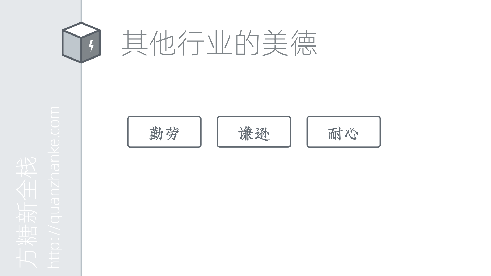 程序员这个职业和大部分其他职业是很不一样的。 比如说，我们很多行业的杰出工作者，往往具备勤劳、谦逊、耐心之类的美德。
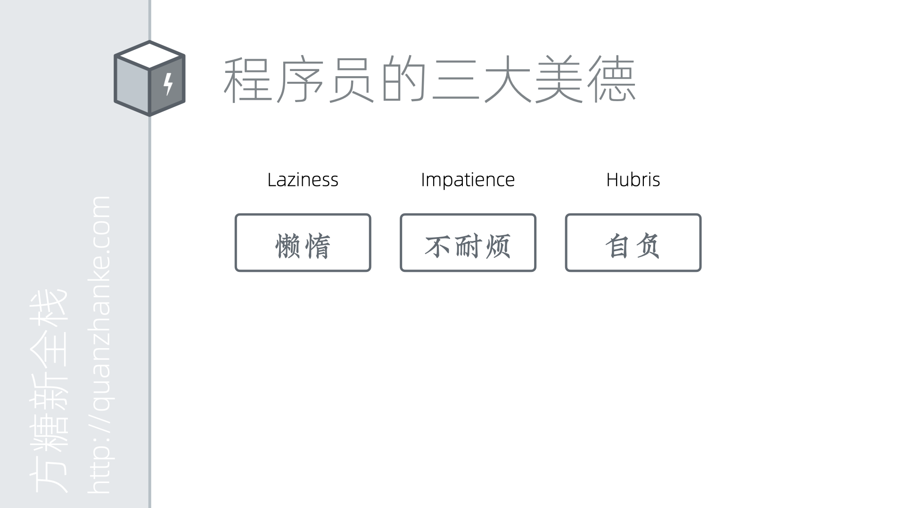 而程序员的三大美德是这样的：懒惰、不耐烦和自负。
这话是 Perl 语言的作者 Larry Wall 说的。他解释说。 懒惰让你花大力气去避免消耗过多的精力。所以你会写出节省体力的程序，同时让别人也能利用它们。为了少回答别人的问题，你也会写出完善的文档。 不耐烦是当你发现计算机在偷懒时的愤怒。它让你写的代码不但能解决当前的需求，还富有预见性。或者至少尝试着有预见性。 自负让你有信心编写或者维护出没有缺点的程序。
这些话得到了广泛的传播，原因可能在于它有一半是开玩笑的，而另一半却又过于真实。
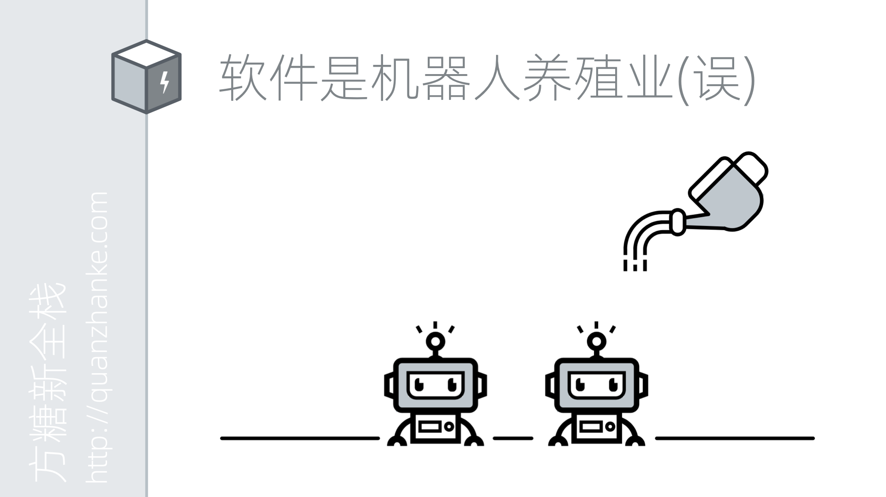 软件行业之所以特殊，是因为它既不是和真正的人类做生意，也不是和完全没有智能的物品打交道。 机器不需要吃饭，也不需要休息，更不需要人权。只要接上电，它们就会小时的工作。 同时，机器又是有一定智能的。它们可以按照我们制定的规则，高效的进行重复劳动。
我经常开玩笑的说，程序员主要从事的是机器人养殖业。
每当发现一种需求，我们就生产一种机器人，然后让机器人去干活。 我们自己就又可以休息了。人类的本质是复读机，而机器能更好的进行重复。所以它们其实是更好的产业工人。 以前它们藏在电脑里工作，在人工智能和物联网起来以后，它们会慢慢的走到现实世界。这一点也会表现得更明显。
所以你看，软件思维的第一点就是，程序员本身并不直接工作，他们只生产和维护机器人，让机器人代替自己工作。
但是懒是无止境的。当需求多起来，程序员们就觉得，这个生产机器人也是挺累的啊。然后他们发现，要生产的机器人都有某种程度的类似。 于是他们生产了一堆机器人配件。这样要做新机器人的时候就不用从头开始做，只需要拼接几下就好了。
这就是软件思维的第二点，要尽可能重用，避免重复自己。也就是DRY，Don't Repeat Yourself 原则。
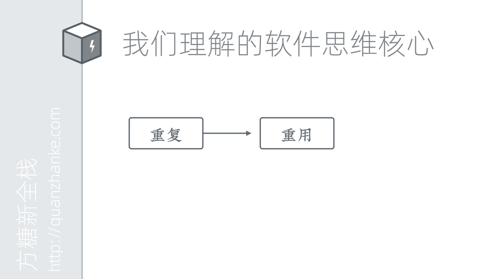 所以，软件思维的核心，就是一个从「重复」到「重用」的过程。 注意这是一个「过程」，而不是一个「结果」。它是从「具体」慢慢的走到「抽象」的。 还有很多同学既知道「重复」、也知道「重用」，但是就是没法从复杂一点的需求中抽象出规则和算法来。 这是因为他们想跳过前者，直接得到后者。这对于入门不久的同学来说，还是有难度的。
 我们来看一个具体例子。用微信扫描图上的二维码，就可以动态的看到这个对话。
我们来看一个具体例子。用微信扫描图上的二维码，就可以动态的看到这个对话。
小方同学每隔十分钟就会问一次一加一的问题。这是重复。而小君老师从这个重复的过程中发现了规律，于是他在小方第三次问之前就给出了答案。
 如果小方同学的智商和记忆力如此稳定，那么小君老师就可以开始让程序，也就是机器人出场了。
这个机器人每隔十分钟，就会给小方同学发送「2」这个消息。
如果小方同学的智商和记忆力如此稳定，那么小君老师就可以开始让程序，也就是机器人出场了。
这个机器人每隔十分钟，就会给小方同学发送「2」这个消息。
这就是重复。重复是很脆弱的，它建立在需求从不变动的情况下。在现实世界中，需求总是会变动的。而且在互联网行业里，还有一个岗位专门负责修改需求，那个岗位叫做「产品经理」。
于是当小方同学有了成长，开始问二加二等于几时，我们之前的机器人就不够用了。我们需要做一个专门发送「4」的机器人。随着小方同学的问题越来越多，我们要做的机器人也越来越多。
最后，我们终于忍不住了，为了偷懒，我们做了一个加法机器人。只要小方同学问的是加法问题，这个机器人都能处理。它会自己从问题中抽取加数、被加数，然后发送结果。它也不再定时发送，而是实时响应问题。这就是重用。
但是重用是没有尽头的。因为明天小方同学可能还会问乘法问题、四则运算问题、甚至物理问题。我们也需要根据需求的不断升级，不同的抽象出更高阶的规则。
做好了这些，每个程序员都能沉淀下来一些基础库、一些工具链，用来处理之前没有抽象到的新需求。
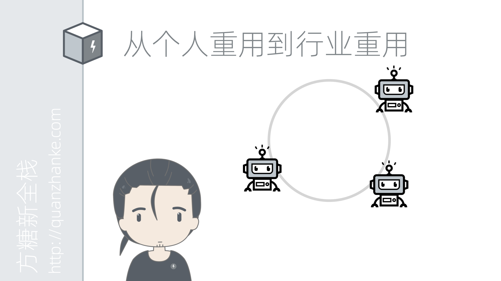 但是，再重复一遍，好的程序员是很懒的。所以他们把自己的代码，也就是前边我们说的机器人，放到的网络上分享给其他人。还发起了声势浩大、又影响深远的开源运动。我们几乎找不到第二个行业能如此开放、如此毫无保留和如此大规模的共享行业知识和成果。
正是得益于前辈们栽下的参天大树，今天的我们有了大量可以使用的、成熟的开源基础库。让我们可以在其基础上，更快的构建出更强大的应用程序。这才是真·祖师爷赏饭。
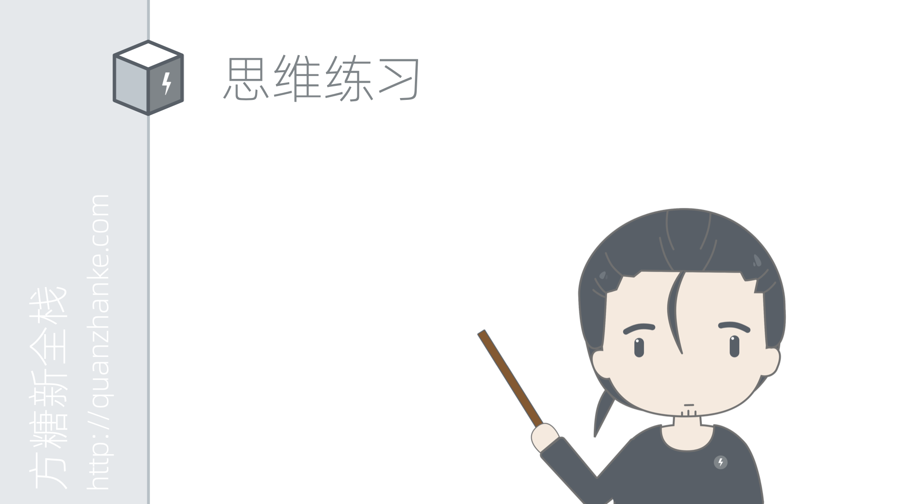 所以，并不是你拿着键盘开始写代码时才产生了软件思维。当你觉得自己工作太多，想要分出去的时候，你的软件思维已经萌芽。那些把工作分给别人的人，成为了企业家；把工作分给机器的人，成为了程序员；把工作分给其他程序员的人，成为了世界首富。
但不管你想成为哪种人，不停的进行从「重复」到「重用」的思维练习都会让你受益匪浅。
软件的分类
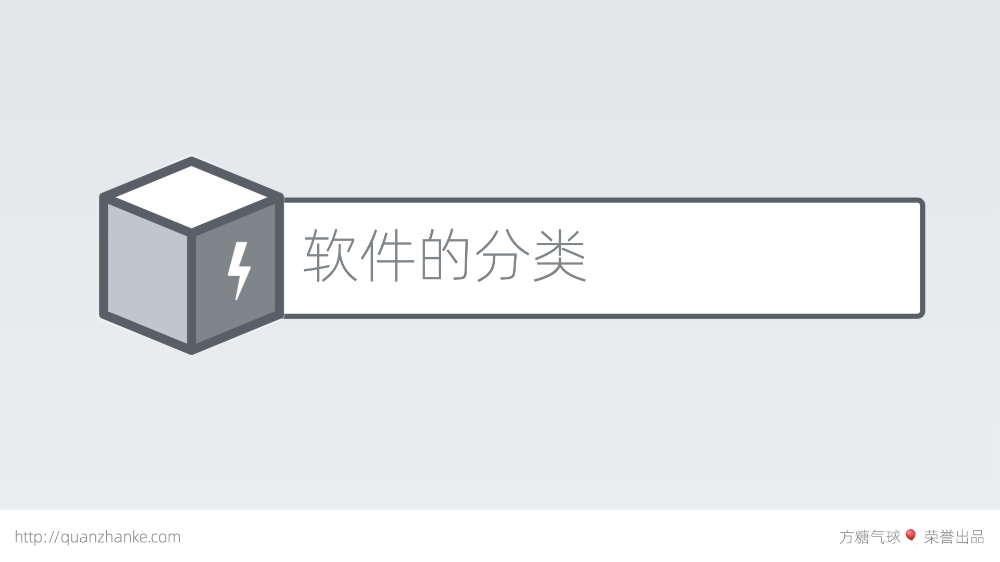 我们这节课来讲讲软件的分类，建立对整个软件开发的整体视角。
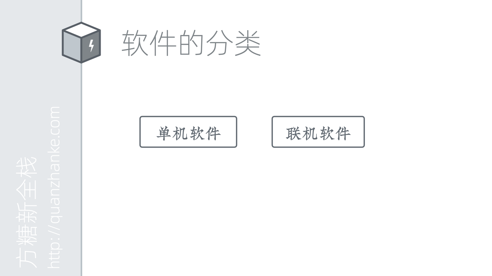 软件分类的方法有很多种，我们这里主要从运行模式上进行分类。 首先，我们把不需要网络就能完整运行的软件叫做单机软件。 把需要网络才能工作的软件叫做联机软件。 玩游戏的同学应该很清楚，这就是单机游戏和网络游戏的区别。
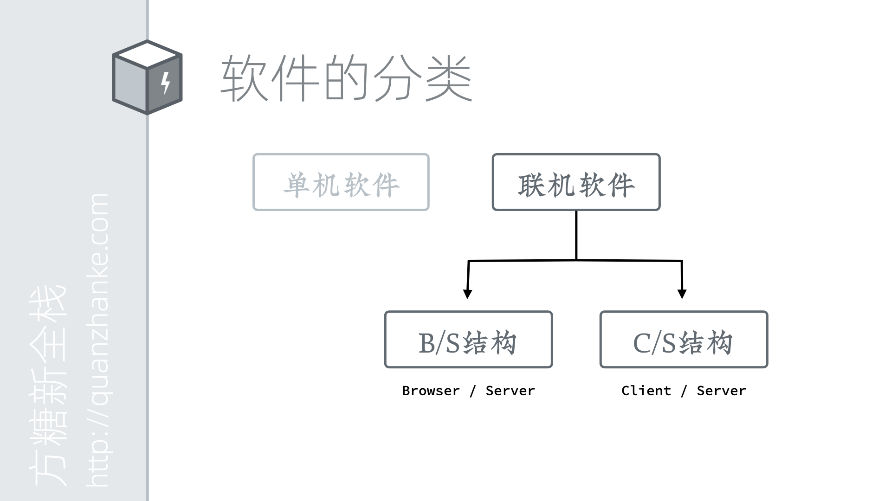 由于网络的大规模普及，我们现在使用的大部分软件都是联机软件。 联机软件又分为结构和 结构。 B代表的是Browser，也就是浏览器；C代表的是Client，也就是客户端。 一般来讲，B/S结构的联机软件就是我们常说的网站。 而C/S结构的软件就是电脑客户端和手机APP。 B/S和C/S模式最容易区别的特征是，B/S不需要额外安装，打开浏览器即可使用；而C/S需要先安装一个客户端才能使用。
不过，随着以微信小程序为代表的更轻的C/S结构的兴起、以及基于Web技术的客户端开发工具链的成熟，这两种模式之间的界线正变得越来越模糊。
 我们电脑上的计算器是一个典型的单机软件，它不需要联网就可以很好的工作。
我们电脑上的计算器是一个典型的单机软件，它不需要联网就可以很好的工作。
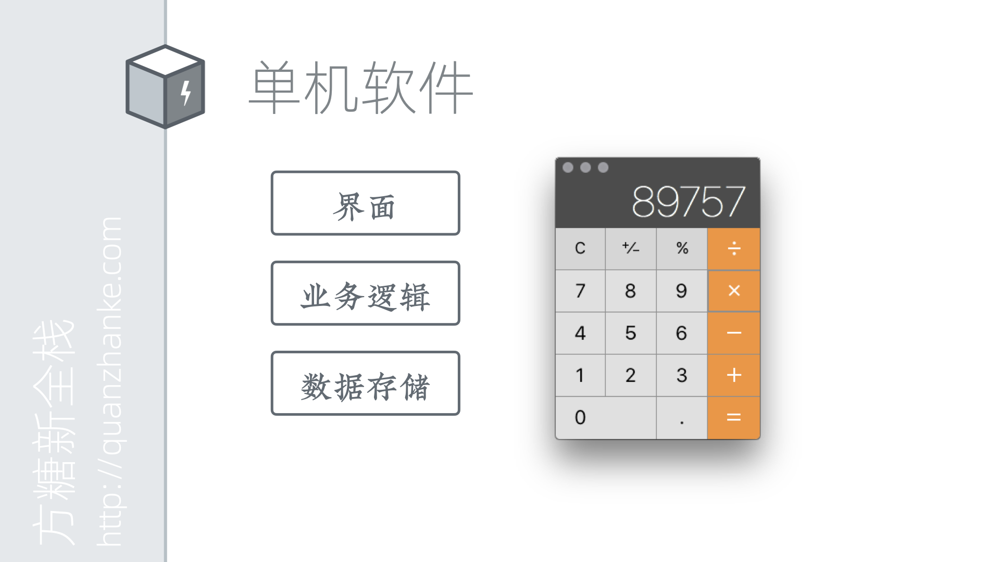 如果我们仔细观察，就会发现，单机软件通常包括界面、业务逻辑和数据存储三个部分。 界面用来获取用户输入的数据，可能是通过鼠标点击、也可能是使用键盘输入。 在移动设备上，语音和视频作为输入也很常见。 获取数据以后我们会调用业务逻辑来进行运算，以得到用户想要的最终数据。 而最终数据也是通过界面展示给用户的。
如果我们希望下次启动软件时，还能获得上次的数据，我们就需要在软件退出之前将数据存储下来。
于是，界面、业务逻辑和数据存储就构成了绝大部分软件的基本结构。
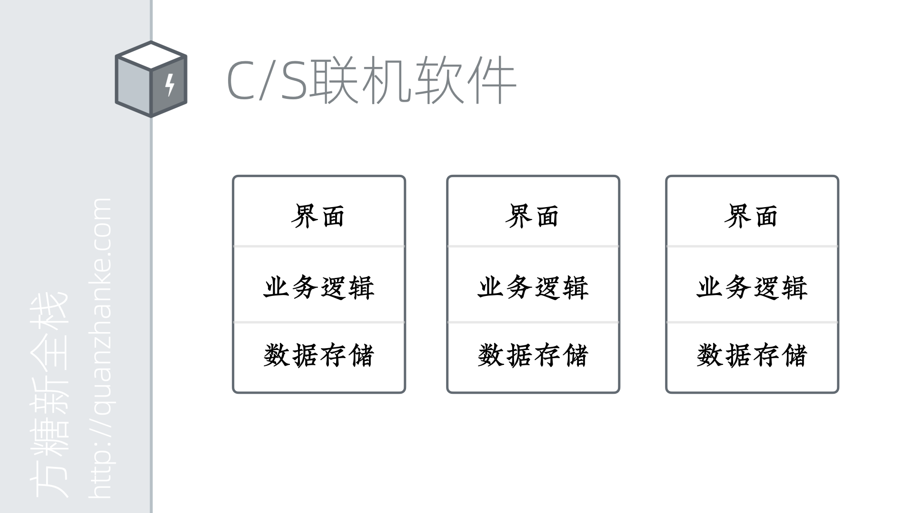 单机软件结构在单人单机使用时，是很OK的。 但是当一个用户需要在多台电脑上运行软件时，比如白天在公司的电脑办公，晚上在家里的电脑加班，就会遇到数据存储的问题。 因为每台电脑上存储的数据是不同的。只能用U盘拷来拷去。 我们就想，既然有了网络，那么能不能把数据存储放到网上去呢
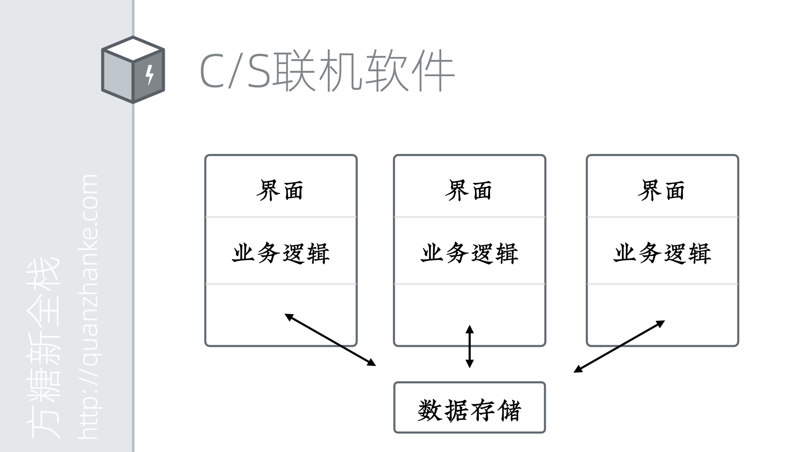 于是就出现了C/S结构。它把数据存储放到了网络上，这样在不同的机器上就可以使用同一份数据了。 当然，「放到网络上」其实有很多实现方式，你可以所有的数据操作都实时从服务器上读写。也可以启动软件时从服务器上拉取数据、运行时读写本地数据、关闭软件时把数据上传到服务器。
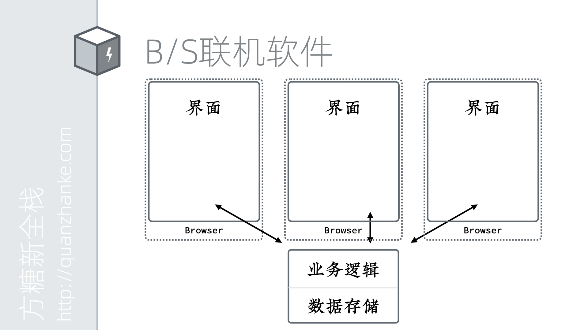 但C/S软件用多了，大家又觉得每台机器都要来装个客户端挺麻烦的。能不能连客户端也不要装呢。于是基于浏览器的B/S结构就应运而生了。它把数据存储和业务逻辑都放到服务器上，原来的客户端用浏览器替代，通过HTML来构建界面。
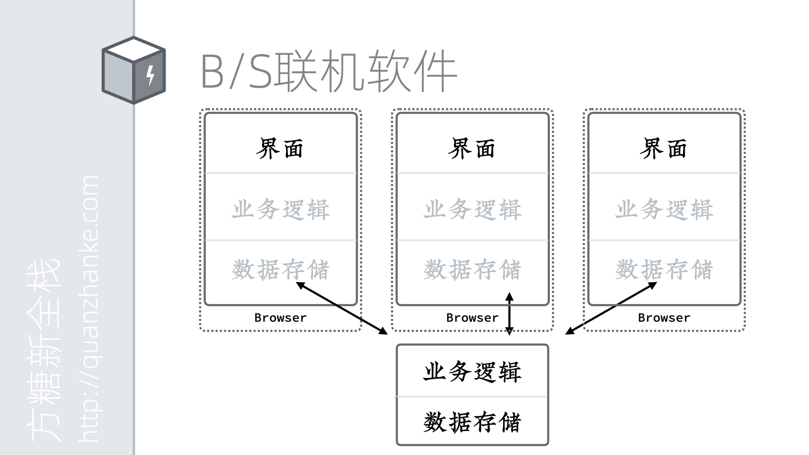 在互联网早期这样就够用了。但随着需求的增加，我们发现光有界面还是不够用，还是需要一些前端逻辑的，比如把用户输入的日期转换下格式什么的。慢慢又发现有些临时数据可能需要存到浏览器里边，比如文章的草稿。这样保存文章正好遇到网络出问题，本地还能找出文章的备份来。于是前端逻辑和数据存储又被加回了浏览器里边。
 所以呢，绝大部分软件的架构也就是我们上边提到的单机、C/S结构和B/S结构这样三种。同时覆盖了这三种模式的技术栈，就可以开发出绝大多数的软件。但是这个技术栈并不简单。因为不同的系统、不同的结构需要的语言是不同的。我们来简单看一下。
所以呢，绝大部分软件的架构也就是我们上边提到的单机、C/S结构和B/S结构这样三种。同时覆盖了这三种模式的技术栈，就可以开发出绝大多数的软件。但是这个技术栈并不简单。因为不同的系统、不同的结构需要的语言是不同的。我们来简单看一下。
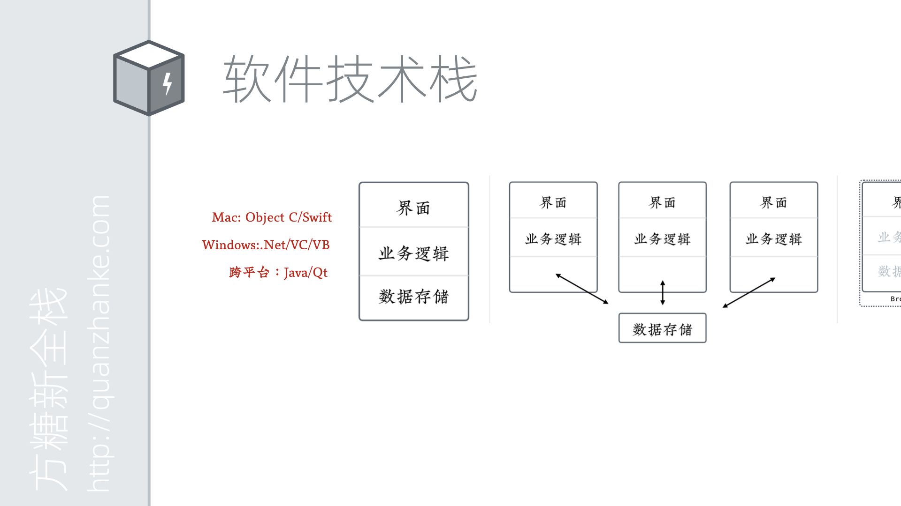 我们之所以能在操作系统上构建出软件界面，主要是使用该系统支持的二进制文件格式调用了系统提供的API。所以本质上来讲，只要能编译出这些二进制文件，用什么语言开发都可以。但是现实中的软件往往更为复杂，还会涉及到各种库、组件重用、甚至硬件驱动的问题。
所以最优先的是使用该系统的主流语言来编写。Mac系统就是Object C和Swift。Windows系统就是。Java和写成的软件可以在多个系统运行，但是往往在性能和界面上会有一些不足。
这是电脑系统的情况。
如果要在手机上开发软件，我们需要至少兼顾 iOS 和 Android。iOS 依然采用苹果的Object C和Swift，Android主要使用Java和Kotlin。
 前边说的是单机软件的情况，联机软件因为多出来了服务器端，所以更为复杂一些。因为目前主流的商用服务器都是采用类Linux系统，所以主要用在开源社群流行的语言来编写，比如 PHP、Python、Java。最近两年 和Go增长也很快。
前边说的是单机软件的情况，联机软件因为多出来了服务器端，所以更为复杂一些。因为目前主流的商用服务器都是采用类Linux系统，所以主要用在开源社群流行的语言来编写，比如 PHP、Python、Java。最近两年 和Go增长也很快。
 而在浏览器里边，我们主要通过JavaScript来编写前端逻辑。
而在浏览器里边，我们主要通过JavaScript来编写前端逻辑。
说到这里，大家应该发现，要想覆盖常用软件的场景，至少需要学两门到三门语言。其中最有潜力的是 Java，因为它除了浏览器的前端逻辑，其他都能开发。
但如果我们先不看单机和C/S结构的Client部分的话，就会发现其实JavaScript也是全覆盖。因为NodeJS也是JavaScript。
你可能会问，为啥不看单机，这不是作弊么？这是因为我们的确有一种类似作弊的方法来解决这个问题，那就是混合应用。
这种应用的思路其实很简单，就是我们直接把浏览器打包成Client，这样B/S结构就变成C/S结构了。这种方法看起来简单粗暴，但随着电脑和手机性能的提升，越来越好用。
很多知名软件，比如微软的和网易云音乐的电脑版都是采用这种混合技术来做的。
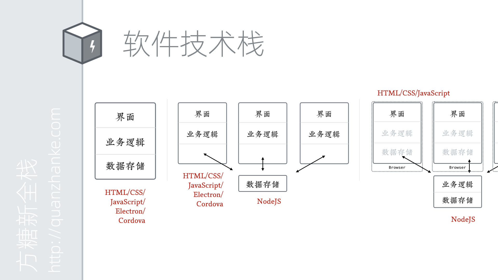
所以按照这个思路，我们就可以使用「JavaScript/HTML/CSS加混合应用框架」这个单一技术栈覆盖掉绝大部分的软件开发需求。这个就是我们方糖全栈路线图选择的技术栈。
 可能会有同学问，我有必要做这么多吗？大公司不是每个人只需要负责一小部分内容就够了？这个说法是没有错，但是很不划算。因为一旦你掌握了完整的技能，就可以独立生产出价值。假设每一部分的价值是1，那么五个部分组合起来的完整价值不是5，而是100。这就是零件和整机的价值差。当然，我也非常明白要同时学习前端、后端和客户端是非常大的工作量，但是通过我们精心设计的技术栈，只需要额外付出20%的投入，就能带来200%的回报，这简直太值了。
可能会有同学问，我有必要做这么多吗？大公司不是每个人只需要负责一小部分内容就够了？这个说法是没有错，但是很不划算。因为一旦你掌握了完整的技能，就可以独立生产出价值。假设每一部分的价值是1，那么五个部分组合起来的完整价值不是5，而是100。这就是零件和整机的价值差。当然，我也非常明白要同时学习前端、后端和客户端是非常大的工作量，但是通过我们精心设计的技术栈，只需要额外付出20%的投入，就能带来200%的回报，这简直太值了。
可能也有同学会疑惑，既然这个技术栈这么好，那么之前为什么没人学呢。这是因为使用Web技术构建客户端的时候，会有一定程度上的性能损失。最近几年大家电脑和手机的性能上来了，所以这些技术才真正变得实用。另一方面是，使用 JavaScript 技术栈的原生UI方案也得到了长足的发展。比如 React Native 和 Flutter ，它们可以开发出性能媲美原生应用的混合应用。
全栈带来了「完整价值」、「独立性」和「全局视角」，让你看得见大局，干得好小事。即使以后你在公司里只担任前端或者后端岗位，思考方式和视野也更为深远。所以呢，我是非常建议大家去学习全栈或者将自己现有的技术栈补充为全栈的。
一个全平台应用的诞生
今天我们通过一个简单的Todo项目来看一下基于Web开发的全平台应用的全过程。主要目的是为大家建立全局视野，可能会遇到一些听不懂的技术名词，不懂没关系，先接着看下去，感受整个过程就对了。后边会把这些知识点补充起来的。
 Time Todo是我开发的一个Todo工具。它既有电脑客户端、又有网页版和移动版。还可以通过Web Hook进行Todo数据同步和生成日报等工作，主体应用从想法到完成只用了一个周末。
Time Todo是我开发的一个Todo工具。它既有电脑客户端、又有网页版和移动版。还可以通过Web Hook进行Todo数据同步和生成日报等工作，主体应用从想法到完成只用了一个周末。
 下边我们就从想法讲起。之所以想开发这么一个应用，主要还是来自于日常的需求。
我是一个非常喜欢用Todo的人，这可能是因为我记性不太好。但是市面上的Todo应用并不是为一个重度迷糊症患者设计的。
下边我们就从想法讲起。之所以想开发这么一个应用，主要还是来自于日常的需求。
我是一个非常喜欢用Todo的人，这可能是因为我记性不太好。但是市面上的Todo应用并不是为一个重度迷糊症患者设计的。
第一，大部分的Todo电脑客户端是不支持一直浮动在顶层的。这让我很诧异，因为浮动在顶层很重要。如果Todo不能一直在最上边，那么它被遮挡后，我很可能会忘掉还有这个东西。 第二，大部分的Todo应用只有「待完成」和「已经完成」状态，没有「正在进行中」。 这样当我被电话打断后再回到工作状态时，就需要从一堆Todo里去找正在做的事情。
 如果你是一个普通用户，那么只能到处去找现成的解决方案。比如Mac系统的便签在一定程度上符合了这个需求，它能浮动在顶层、也能透明，但它毕竟不是一个Todo应用，不能很便捷的划掉其中一项。当你拥有编程能力以后，就会多出来一个选择，那就是自己写。自己写的应用能完全符合自己的需求，让你的工作和生活会更加的完美。而不是活在一个「又不是不能用」的世界里。
如果你是一个普通用户，那么只能到处去找现成的解决方案。比如Mac系统的便签在一定程度上符合了这个需求，它能浮动在顶层、也能透明，但它毕竟不是一个Todo应用，不能很便捷的划掉其中一项。当你拥有编程能力以后，就会多出来一个选择，那就是自己写。自己写的应用能完全符合自己的需求，让你的工作和生活会更加的完美。而不是活在一个「又不是不能用」的世界里。
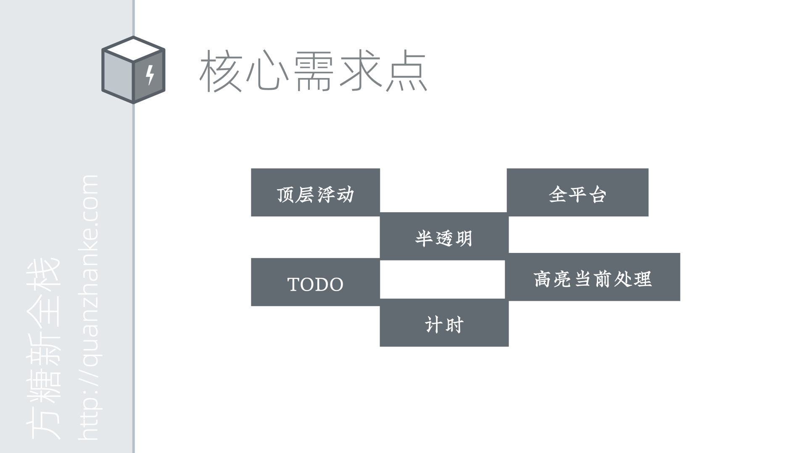 那么既然决定做了，我们就需要梳理一下之前的需求。
首先它得是一个Todo，可以添加，可以划掉的那种。 然后它需要支持顶层浮动、可以半透明。 同时，它可以高亮当前正在处理的那一条Todo。
这里问题就来了，怎么才能知道当前在处理哪条呢？ 我们用个土方法，就是手工点。开始任务的时候点一下，结束的时候点一下。
这样比较准确，而且有意思的是，它还带来了一个附加价值，那就是计时。 之前在公司经常会被要求需要写日报周报，每项任务会要求写开发时间。这种场景下计时功能就很实用了。
 然后我们需要给这个应用一个鲜明的定位。一般在大公司做开发时不会遇到这类任务，但在独立开发中，这个定位甚至可能决定它的下载量。
现在Todo应用已经非常多了，可能是因为写起来很简单，那些前端框架都用Todo做Demo，简直就是框架界的「Hello World」了。
所以我们需要突出这个应用与众不同的地方。
然后我们需要给这个应用一个鲜明的定位。一般在大公司做开发时不会遇到这类任务，但在独立开发中，这个定位甚至可能决定它的下载量。
现在Todo应用已经非常多了，可能是因为写起来很简单，那些前端框架都用Todo做Demo，简直就是框架界的「Hello World」了。
所以我们需要突出这个应用与众不同的地方。
回顾一下我们的核心需求点，计时是一个亮点，可以用来重点突出下。最简单又最有效的方式就是把这个亮点弄到名字里边。 它是一个可以计时的Todo。我们简单的把「时间」和「Todo」合到一起，就是「Time Todo」。
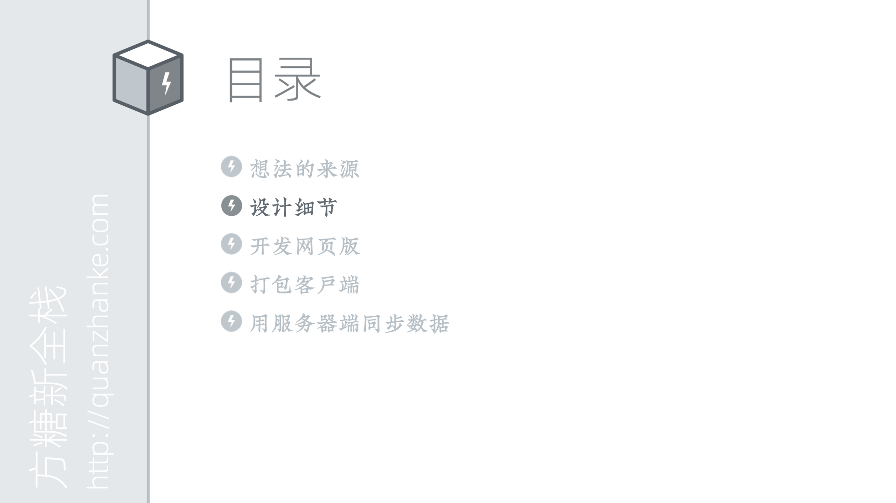 下边我们来进一步设计一下这个品牌。
 我一般喜欢从Logo开始设计。从之前的思路往下走，我们做的是融合了「时间」和「Todo」的产品。它的图标应该是什么样子呢？让我们到图标网站thenounproject.com去寻找下灵感，分别输入time和todo，看看对应的图案都有哪些。
我一般喜欢从Logo开始设计。从之前的思路往下走，我们做的是融合了「时间」和「Todo」的产品。它的图标应该是什么样子呢？让我们到图标网站thenounproject.com去寻找下灵感，分别输入time和todo，看看对应的图案都有哪些。
 我们可以看到，Time的代表图像主要是clock，而Todo的代表图像主要是check box。
我们的任务就是，设计一个图标，同时包含这两个因素。仔细观察两种图标，我们会发现check box的形状其实和钟表的指针很像。那我们如果把二者给融合起来会是什么效果呢。这时候就需要通过设计工具来测试下我们的想法。
我们可以看到，Time的代表图像主要是clock，而Todo的代表图像主要是check box。
我们的任务就是，设计一个图标，同时包含这两个因素。仔细观察两种图标，我们会发现check box的形状其实和钟表的指针很像。那我们如果把二者给融合起来会是什么效果呢。这时候就需要通过设计工具来测试下我们的想法。
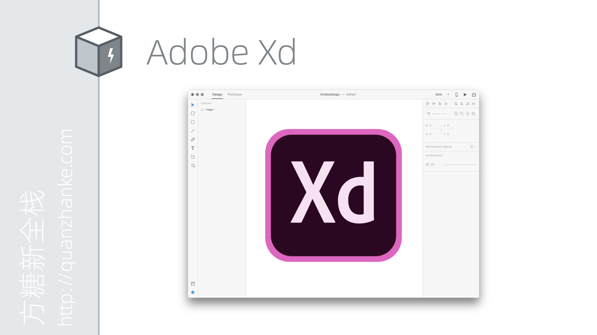 我最常用的就是Adobe家的Xd。这是一个矢量设计工具，可以同时用来设计Logo和软件界面。拥有Windows和Mac版本，而且是免费的。
 我很喜欢用这个软件，甚至用它临摹过四格漫画里的小人。
我很喜欢用这个软件，甚至用它临摹过四格漫画里的小人。
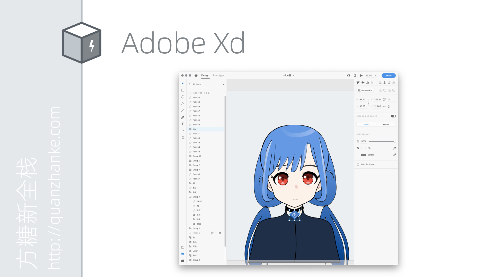 2019年国庆期间做的将PPT直接转为视频的「Slide酱」也是用它画的看板娘。矢量设计软件最方便的地方是，当你修改形状时，描边会随之更新。这样因为手残无法画出准确线条的同学，比如我，只要慢慢调整曲线，总能得到自己想要的图案。
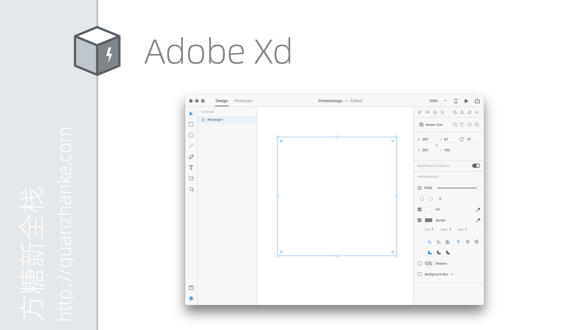 下边我们简单看下如何用它来设计Logo。画个正方形，拖动角落的小圆圈控制弧度，使其变成圆角。
 填充蓝色，放入小一号的圆角正方形。表盘完成。
填充蓝色，放入小一号的圆角正方形。表盘完成。
 添加指针。采用矩形加半透明，使其同时看起来又像是check box里的勾。
添加指针。采用矩形加半透明，使其同时看起来又像是check box里的勾。
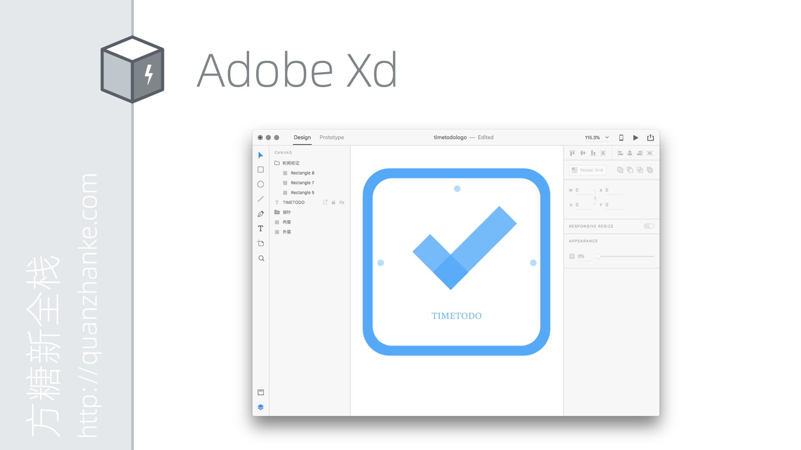 进一步补充细节，添加时间刻度和品牌标识。
 再优化一下细节。把时间标记和边框整合到一起，让图案更简洁一些。给分针添加残影，表示它在旋转。
再优化一下细节。把时间标记和边框整合到一起，让图案更简洁一些。给分针添加残影，表示它在旋转。
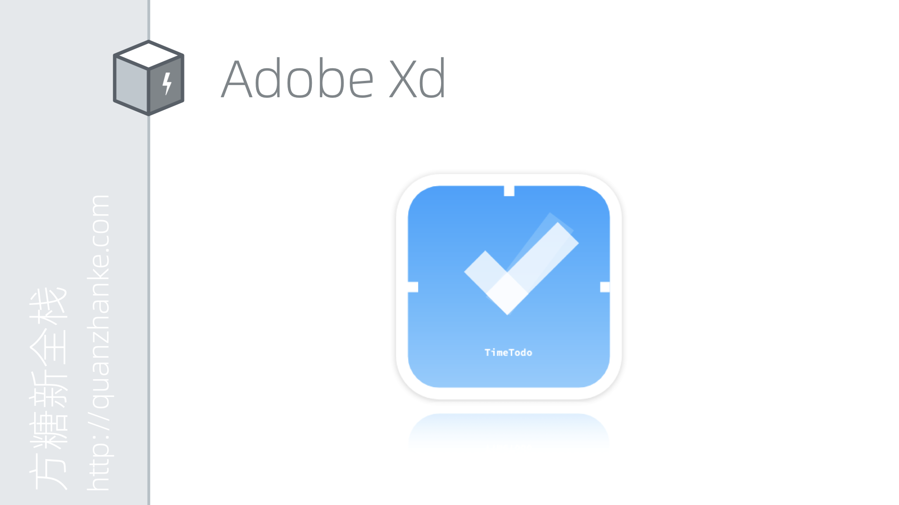 观察以后觉得不够重，于是决定把配色翻转下，同时给蓝底加上渐变，增加层次感。 这样Logo就设计完了。
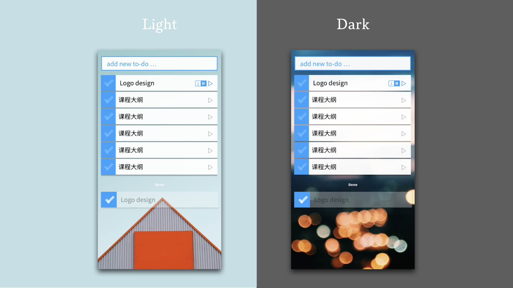 将Logo的风格应用到Todo上边，我们就可以设计出类似这样的原型。
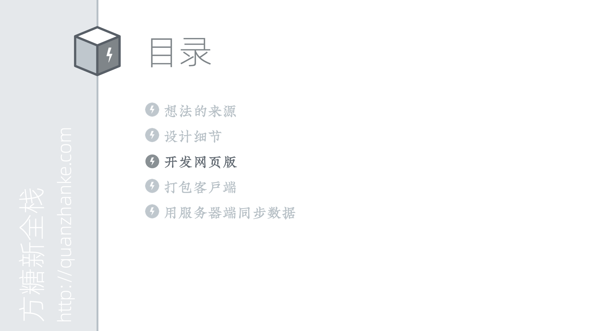 接下来我们进入开发阶段。首先要开发的是网页版。为什么是网页版。前边也说过，我们采用的技术栈是以Web技术为核心的。先做网页版，然后将网页版打包，就有了电脑和手机客户端。
 复习一下我们之前讲过的B/S联机软件的结构。可以看到在现代浏览器里边，界面、前端逻辑和数据存储都是可以完成的。
复习一下我们之前讲过的B/S联机软件的结构。可以看到在现代浏览器里边，界面、前端逻辑和数据存储都是可以完成的。
 这意味着，其实单机软件能做的事情，浏览器其实也能做。虽然在浏览器里，能调用的接口和能存储的数据都会受到限制，但对于简单的应用已经足够了。
这意味着，其实单机软件能做的事情，浏览器其实也能做。虽然在浏览器里，能调用的接口和能存储的数据都会受到限制，但对于简单的应用已经足够了。
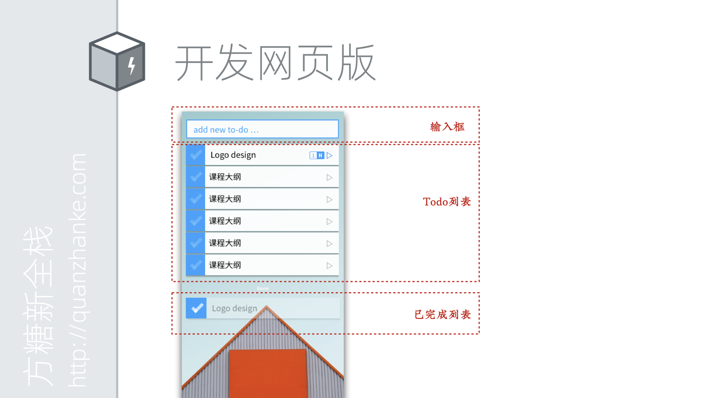 仔细分析下原型就会发现，其实整个界面挺简单的，它只有三部分。新Todo输入框、Todo列表和已完成Todo列表。
 首先我们会通过HTML，也就是超文本标记语言来构建整个页面的结构。比如通过div图层标签作为容器，通过ul无顺序列表标签来列出Todo项目。
首先我们会通过HTML，也就是超文本标记语言来构建整个页面的结构。比如通过div图层标签作为容器，通过ul无顺序列表标签来列出Todo项目。
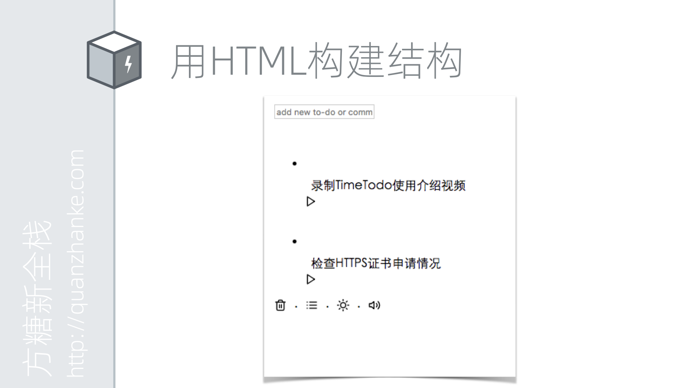 这就是纯粹通过HTML构造出来的界面。显然这和我们的原型相差甚远。这是因为我们还没有添加样式。
 接下来我们通过CSS，也就是层叠式样式表，来给页面加上样式。CSS主要描述每一个标签应该对应什么样的样式。比如高多少、边框多少、要不要阴影等。
接下来我们通过CSS，也就是层叠式样式表，来给页面加上样式。CSS主要描述每一个标签应该对应什么样的样式。比如高多少、边框多少、要不要阴影等。
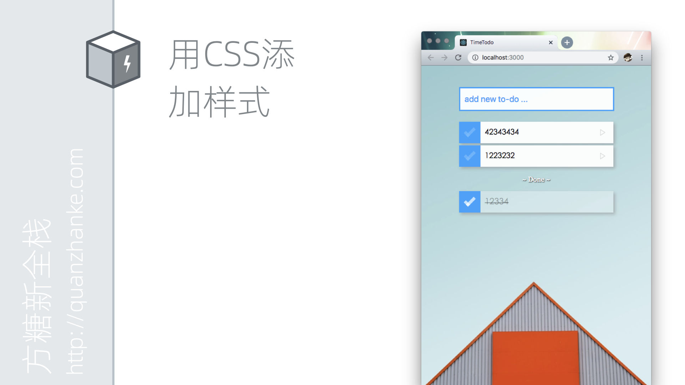 这是我们添加完样式的效果，和原型已经非常接近了。通过HTML和CSS，我们就完成了界面构成。但是这个界面是没有灵魂的，因为它还不会动。
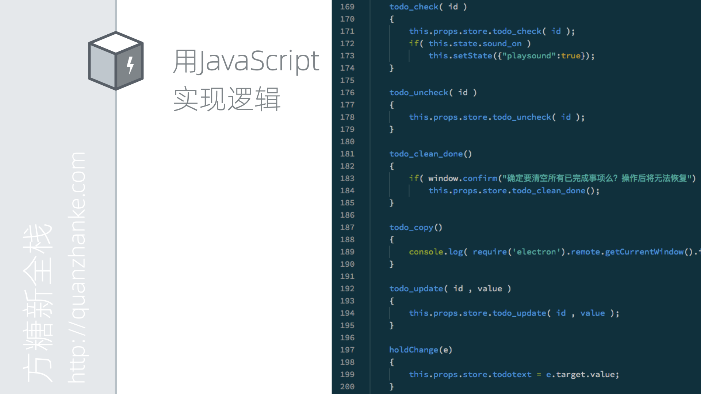 这时候我们就需要使用JavaScript语言来描述逻辑。比如当在输入框里边按回车键时，要将内容添加到Todo列表里边去。比如当点击列表项前边的勾型图标时，应该将Todo标记为已完成状态。JavaScript除了能对HTML、CSS进行控制，也可以调用浏览器提供的接口，比如它可以将Todo的内容写入到浏览器的localStorage存储中，这样下次打开这个网页时，上次写的内容还可以显示出来。
 这是我们网页版开发完成后的最终效果。大家可以访问官网上的网页版链接，自己感受下。
这是我们网页版开发完成后的最终效果。大家可以访问官网上的网页版链接，自己感受下。
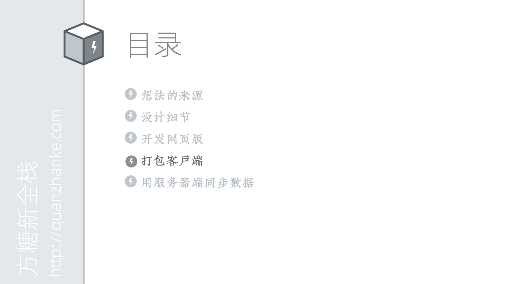 在完成了网页版以后，其实我们的工具已经可以在电脑和手机上使用了。因为它们都有浏览器。而采用Web技术开发的应用，在这些浏览器上都能工作得很好。那为什么还要打包呢？打包是为了提升体验。比如通过浏览器使用，每次都要输入网页或者打开书签；浏览器标签页又很多，经常会不小心关掉。最重要的是，TimeTodo的需求里边，是希望半透明的浮动在顶层。这个功能单纯的调用浏览器接口是做不到。
 这时候，我们就会转向使用混合应用解决方案。比如Electron。
这种方案的原理其实也很简单。
首先，你可以认为它提供了一个没有多余界面的浏览器，没有地址栏、没有前进后退、只有一个纯粹的窗体。它可以单独启动。这样从用户角度看，就是一个独立的应用了。只不过说和其他原生应用相比，它只能操作浏览器里边的接口和数据。
这时候，我们就会转向使用混合应用解决方案。比如Electron。
这种方案的原理其实也很简单。
首先，你可以认为它提供了一个没有多余界面的浏览器，没有地址栏、没有前进后退、只有一个纯粹的窗体。它可以单独启动。这样从用户角度看，就是一个独立的应用了。只不过说和其他原生应用相比，它只能操作浏览器里边的接口和数据。
但是这个包在外边的浏览器并不是标准的浏览器，而是Electron自己的浏览器。它定制一些JavaScript可以访问的接口，把它和操作系统接口对接起来。这样这个包在里边的Web应用，也就具备了一些系统级别的能力。
 比如这段JavaScript，它就让我们可以创建一个总是浮动在顶层的透明窗口。
比如这段JavaScript，它就让我们可以创建一个总是浮动在顶层的透明窗口。
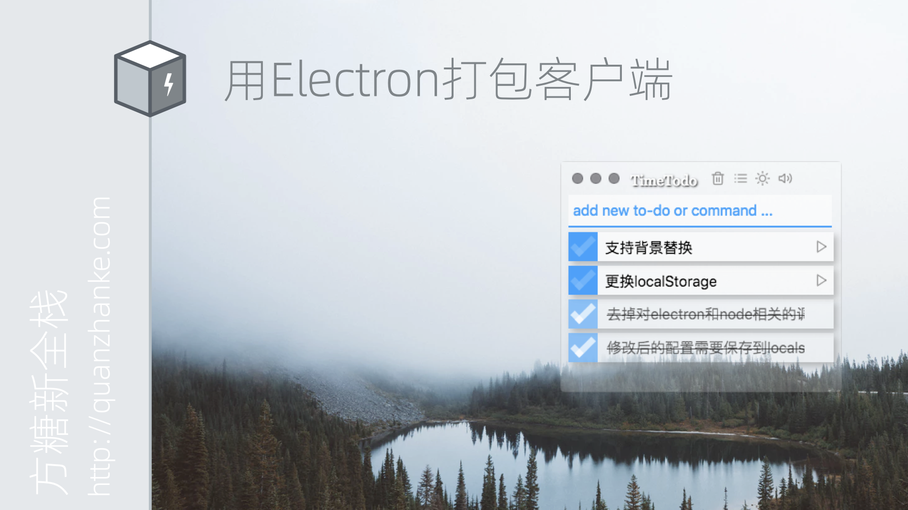 通过这种方式，我们完成了Mac和Windows版本的开发。它最终看起来像这样子。Linux下因为驱动问题，窗体无法透明。但Linux用户可以直接使用网页版。我们也可以通过类似的方式，用Cordova将网页版打包为iOS和Android应用，这样就覆盖了移动端。
 到现在，我们的全平台应用看起来就开发完了。
到现在，我们的全平台应用看起来就开发完了。
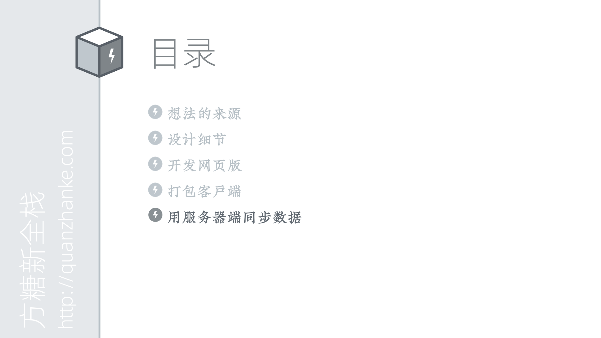 但在实际使用中，我们会发现，各个平台的数据是割裂的。当我们从Mac换到Windows上时，两个应用上的Todo内容是完全不同的。我们需要将数据同步，需要将数据放一份到服务器端，这就是说，它需要从单机软件变成C/S或B/S结构。
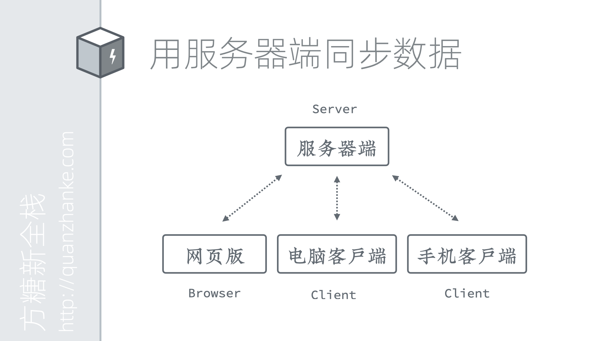 我们最终采用的是这样的结构。首先通过NodeJS或者PHP来实现服务器端的逻辑和存储。 然后不管是网页版还是客户端版，都以同样的规范和服务器进行通信。因为客户端其实是网页版打包的，所以这一点很容易做到。只要简单的使用Ajax这种基于JavaScript的异步传输技术就可以。
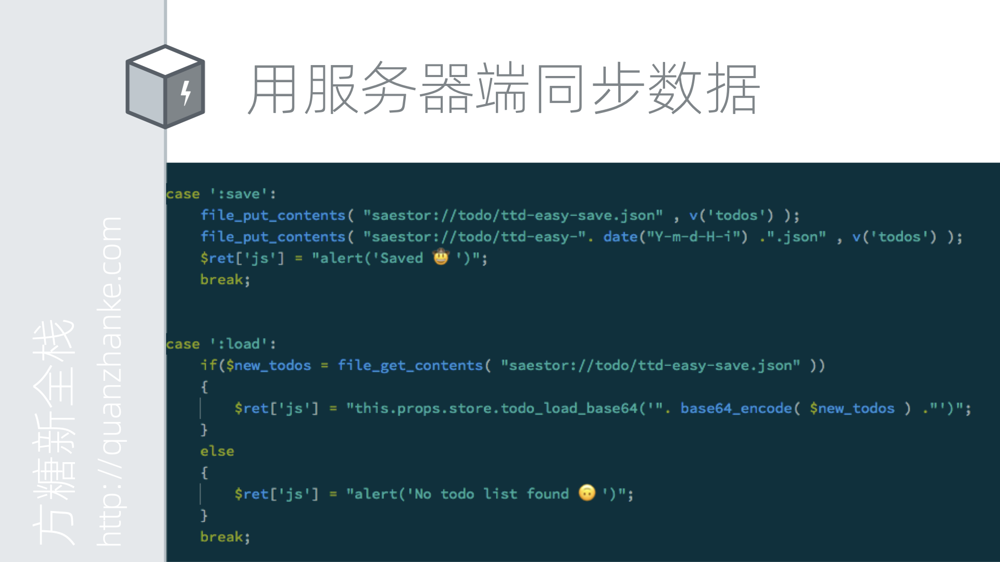 我们将的输入框重用起来，让它可以输入命令。具体来说，当我们发现Todo的内容是以冒号开头时，我们就认为这是一条命令。当这个命令是save的时候，我们将Todo里列表发送到服务器端，服务器把它存到数据库或者其他存储里。让这个命令是load的时候，服务器查找上次存入的内容，然后返回给客户端，客户端把它更新到本地、也就是浏览器内部的存储里。在Mac上save一下，到Windows上load就可以接着干活了。这样通过输入命令，我们就实现了在多个平台之间的数据同步。
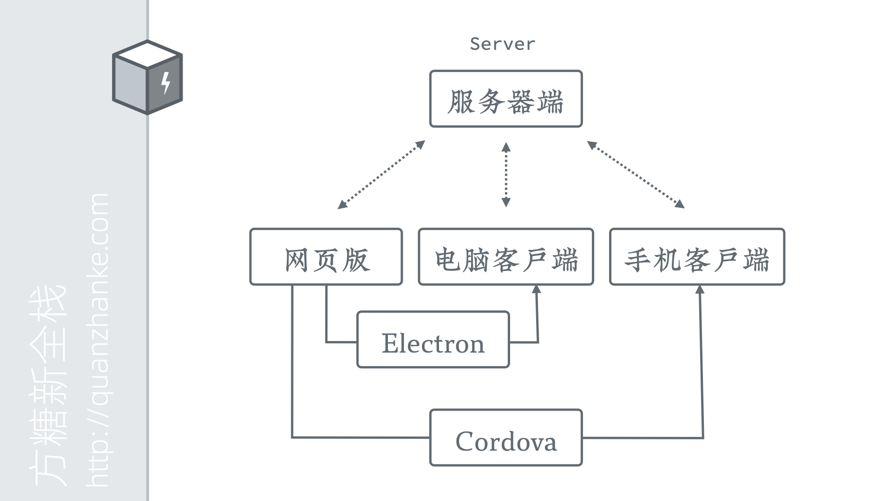 让我们来回顾一下这个过程。首先我们开发了网页版；然后通过Electron和Cordova打包了电脑客户端和手机客户端；最后通过服务器端实现了网页版和客户端之间的通信。从而实现了一个真正意义上的全平台应用。
精益流程
什么是精益创业
「精益创业」是硅谷科技公司 IMUV 的联合创始人埃里克·莱斯提出的一个理念，他以此为主题出版了一本同名的书。
其实对于程序员来讲，尤其是熟悉敏捷开发的同学来讲，「精益创业」其实就是「精益开发」的增强版，它将精益的思想扩展到了产品的全生命期。
下边是它的一些核心思想：
- 所有的战略都基于假设，只有经证实的认知才是可信的
- 对创业来讲，有两个核心假设很重要：价值创建假设和增长假设
- 通过实验来验证认知，通过创建 MVP（最简可行产品）来检测产品是否和市场契合
- 提出了三大常见的增长引擎，可用于验证增长假设
- 去掉虚荣指标，采用创新核算评估真实数据，决定是否转型
《精益创业》这本书非常好，但它更偏重于一些理念的阐述，没有形成一个完整好用的方法论。但幸运的是后来有其他的同学在这本书的基础上，出版了《精益创业实践》等其他周边书籍，逐渐形成了一个完整的创业方法论。
商业模式画布
在精益创业方法论里，有两个非常重要的假设，第一个就是「价值创建假设」。
因为不管是向用户销售软件还是在线服务，它本质上来讲其实是一种价值交换。也就是我们「给什么样的客户」「提供什么样的服务」，然后「收多少钱」的一个简单逻辑。
而围绕着价值的定义、创造和传播，我们可以使用一个非常棒的工具来描述它，这个工具叫做商业模式画布。商业模式听起来是一个很高大上的名词，但它具体化以后就很容易理解。
商业模式画布是以价值为中心的一张图，让我们把所有和价值相关的内容都放到上面，从而可以一目了然地纵观全局。
那下面，我们就来看一下商业模式画布是怎么围绕核心价值，一层一层建立起来的。
价值的定义
商业模式的核心，就是「价值主张」。也就是刚刚提过的，对谁，提供什么样的服务，收多少钱。

创造价值
定义好价值以后，我们会从两方面来考虑它。首先是如何把这个价值给创造出来；然后是如何把这个价值给销售出去。
在价值创造这边，我们可以把它细化为三个方面。

包括：
- 我们需要进行什么样的活动？这里的「活动」是「activity」，其实也可以叫做动作。
- 我们需要什么样的资源？
- 我们需要进行哪些合作？
销售价值
在价值销售这边呢，我们就要思考：

- 我们的价值主张定义得够不够好？
- 我们的渠道通路是不是足够的通畅，到达是不是有效？
- 我们的客户关系要怎么来建立和维系？
其实价值主张应该放到价值定义里边，但因为价值主张它直接涉及到了客户细分，又直接影响到了销售，所以我暂时把它放到销售这一边。
分层结构
按前面的描述，我们比较容易把商业模式画布当成一张图。但事实上，它其实更类似于Photoshop 软件中 的 PSD 文件，是分层的。其中每一层针对一个细分人群。
这主要是因为我们提出的价值主张，很难同时覆盖多个人群。同样的价值主张对一类人来讲可能是非常棒的东西；而对于另一类人来讲可能就毫无用处。
所以，我们提出价值主张之前，就需要进行客户细分，把我们的客户分成几类典型的角色，再针对每一类角色来提出更为具体、更有针对性的价值主张。
画布结构
下面我们就实际来看一下商业模式画布的布局。

在表格的最中间，就是我们的价值主张。在最右边，是客户细分。我们可以用不同颜色的文字，来代表不同的细分客户和针对他们的价值主张。
在价值主张表格的左边，是关于价值创造的区域，有「关键活动」、「关键资源」、「关键合作伙伴」；在价值主张表格的右边，是关于价值销售的区域，除了我们刚才已经说过的「客户细分」，还包含了「客户关系」和「渠道通路」。
表格的最下边一行，分成了两部分，左边是「成本构成」，右边是「收入来源」，它们都是根据我们上面的表格来进行计算的。一旦计算完，我们就可以预先知道这个项目做下来能不能挣钱，或者说挣钱的可能性有多大。
价值主张画布
在整个商业模式画布里边，「价值主张」和「客户细分」是最为基础、也最为关键的地方。如果价值主张没定义好，其他的做得再好也没有用。
所以，为了更好地进行价值主张设计，我们还有一张专门针对这两个部分的、更为详尽的「价值主张画布」。

上边这张图就是「价值主张画布」。它左边是「价值主张」，右边是「客户细分」。
客户细分
在「客户细分」这里，它更为详尽地描述了客户的情况。
这个圆分为三部分，最右侧描述了客户想要进行的工作、要完成的业务；下方是他在完成这些工作的时候所感受到的痛苦；上方是在完成工作后可以得到的收益。
价值主张
图左边的正方形就是我们的价值主张。可以看到，价值主张是针对需求提供的解决方案。比如：针对痛点，我们会提供「痛点缓释方案」，让客户在完成工作的过程中，没有那么痛苦；针对收益，提出「收益创造方案」，让收益变得更多。
在这两个方案的基础上，我们通过产品和服务的形式来将其落地，也就是正方形的左侧部分。
契合
大家可以注意到，在「客户细分」的圆形和「价值主张」的方形中间，有两个正对着的箭头，它表示「价值主张」和「客户细分」之间要达成契合。
因为我们会把整个客户群体分成多个细分群体，所以价值主张画布，它其实也是多份的。针对每一个细分的客户群体，都会有一张自己的价值主张画布。
最简可行产品和产品市场契合
上一节讲了如何通过商业模式画布来规划商业逻辑，但是「所有的战略和规划都是假设」，只有被验证以后的认知才是可靠、可信的。所以接下来，我们就需要用实验的方式来对它们进行验证。
通常，我们会采用「最简可行产品」（Minimum Viable Product，缩写为 MVP）来进行验证。
「最简可行产品」有两个关键词。一个是「可行」，它其实并不是指用户拿过去能用，而是指它可以很好地验证我们的假设。
另一个关键词是「最简」。它是说，除了验证所必需的功能以外，其他的功能都应该先不做。那些功能应该在验证完成之后再去添加，不然如果我们验证失败的话，功能就白做了。在我们的精力非常有限的情况下，这种浪费是非常可惜的。
严格意义上来讲，我们可以针对整个商业规划里边的每一个假设来做一个最简可行产品对其进行验证。但是我们的精力是有限的，所以通常只对核心假设通过MVP来验证。这个核心假设就是我们之前提到过的「价值创建假设」。
一旦这个假设被证实了，我们就认为我们找到了「产品和市场之间的契合」（Product-Market Fit，缩写为 PMF）。
具体而言，我们会在验证假设之前，定下一些量化的指标。在我们验证的时候，进行相应的衡量。最后根据指标的数据，来判断是否达到了 PMF。如果是，就可以进一步的增加功能，往前推进；如果不是，则需要调整，甚至需要通过战略转型来重新找到 PMF。
这种转型可以是针对原有市场的细分市场重新提出价值主张；也可能是扩大需求，让它支持更广泛的人群。但无论如何，在找到 PMF 之前，我们都应该专注于价值假设的验证，而不是功能的丰富和市场的推广。
独立开发的精益流程

前面我们了解了精益创业的一些核心理念，接下来我们就在「独立开发」这个更为具体的副业活动中来看看如何应用精益流程。
这个流程和很多硅谷公司的产品流程很像，但是针对副业做了一些调整和优化。经过三年多时间的使用，我们自己用起来已经很顺手。
- 首先定义价值主张，然后围绕着价值来设计商业模式画布。
- 完成画布以后，我们把画布里的「客户细分」部分拿出来，做成「用户画像」。这是一个将细分客户具体化、变得有血有肉的工具
- 有了画像，再据此还原用户使用产品的各个场景，他们是用电脑还是用手机、是在家里还是在车上使用等等。
- 想象为了在上述场景下向用户传递价值，我们需要什么样的功能，这样就会得到一个功能列表
- 功能列表会很长，不同功能的优先级也不同。所以我们会对功能进行分期，其中最重要也是最靠前的一个功能分期，就是用来开发「最简可行产品」的分期。
- 当「最简可行产品」开发完成后，进行「产品市场契合」的验证，如果达不到设定的验证目标，就需要调整功能，甚至重新设计价值主张。
- 当通过「产品市场契合」后，我们就可以按照分期迭代开发产品的其他功能了。
- 在迭代过程中，我们会持续对新上线的部分功能进行增长优化，保证每一部分功能达到预定的目标。
以上就是我们为独立开发优化的精益流程，虽然讲起来比较多，但实际操作起来还是比较简单的。而且我们其实省略了不少大公司流程中的环节，比如用户访谈、焦点小组等。
福利单词项目简介
Time Todo 过于简单，有种走马观花的感觉。接下来我们再来近距离感受一个更复杂的项目《福利单词》的全流程。
这一部分内容精选自我的开源书《精益副业》，除了独立开发，还讲了网课变现流程，感兴趣的同学可以翻翻。
《福利单词》来自于我在学习过程中的一个原生需求。最开始我是使用 Anki 这个软件来背单词，软件很好用，但是每次都有一种逼着自己去背的感觉，背完以后如释重负。为了提醒自己不要逃避，我还定了一个闹钟每天催自己。
有一天，我又因为上Pixiv（一个二次元内容创作社区）看图忘记了时间。突然间我想到，能不能把背单词和看图片这两个行为绑定到一起呢？
你看，背单词虽然有用，但让我痛苦，度日如年；看图片很欢乐，流连忘返，但似乎不是很「有用」。如果我们把两者结合到一起，一边看图一边背单词，是不是就可以让背单词不那么难受，可以持续不断地背下去了？
这就是福利单词的出发点。
接下来，我们就来看看，怎么从这个还有些模糊的想法中提出一个明确的价值主张，然后围绕它进行商业模式规划、功能和界面设计、验证和迭代开发，最终使其成为一个商业产品。

福利单词的商业模式画布
前边我们已经讲解过商业模式画布，今天我们就以「福利单词」为例，来看看怎么使用。
价值主张

首先来看一下价值主张。它的核心价值就是，让那些觉得学习起来很痛苦的人不那么痛苦，给一点糖，让其可以持续地、无痛地学习下去。它试图给学习过程添加一些乐趣来综合不是那么爱学习的人的痛苦，从而把一个短暂的、难以忍受的学习行为变成一个可以持续忍受、甚至通过习惯驱动可以持久化的行为。
所以我们在「价值主张」这一栏上写上两个关键字，一个叫「无痛学习」，一个叫「持久化的学习」，这是这个产品最核心的两个「价值主张」。
有了这个价值，我们就能帮助客户完成很多以前想学、但是因为各种原因没有办法学下去的东西，从而实现其个人成长和提升。
客户细分

如果要具体化价值主张，就要来看客户细分。
因为是单词学习软件，所以客户群体往往还是跟学习英文需求相关的。具体划分下来，我觉得可以分成三大类。
- 第一类是在学校要考英语四级或者六级的大学生。
- 第二类是有留学或者移民需求，需要考雅思、托福的群体。
- 第三类是需要专业英语来提升自己在职场的业务能力的上班族。
前两类群体是要备考应试的，后一类则更注重实用能力的提升。从学习的内容上来讲，只是题库的不同。所以如果我们的软件支持了「词库切换」或者「自定义词库」功能，就可以比较容易地覆盖他们的学习需求了。
价值主张的细化

光是「有词库，你来背」这个主张和其他背单词软件并没有什么不同，所以我们需要在「价值主张」里再加上「糖」。
但是，对于不同的群体来讲，「糖」是不一样的。如果只是放一些二次元的萌妹子，只有喜欢动漫的人会觉得这是他们的「糖」，可以吸引着他们，每天都来看一看。对于其他一些二次元无感的人群来讲，这些图就毫无吸引力，于是我们需要增加「糖」的种类。
比方说有的妹子就喜欢看帅哥、有的粉丝就喜欢看偶像、有的铲屎官就喜欢看猫猫狗狗、有的吃货就喜欢看肉和甜点。这一部分，我们可以用多图库的方式来满足。
于是，针对不同的客户细分，我们提出三个更为细化的价值主张：
- 「每天看40分钟妹子，一个月记住四六级词汇」
- 「看着帅哥，把雅思托福词汇搞定」
- 「一边云吸猫一边升职加薪」
现在听起来是不是就有吸引力多了？
渠道通路

在「渠道通路」的这个方格里面呢，我们的种子用户主要由微博带过来的流量构成。
通过种子用户进行测试，一旦转化率达标，我们就可以开始对外去做一些合作，以及以微博为起点投放广告，观察广告投放的成本和其带来的流量的关系，以此判断下一步操作。
客户关系

在「客户关系」这里，我们会通过腾讯提供的「兔小巢」这个产品来提供售后支持。它是类似于反馈板的免费工具。用户在上面提交问题，我们会收到微信或者QQ的通知，可以通过网页在电脑上或者手机上进行答复。
关键活动

接下来我们来看一下「关键活动」。
用来验证需求的最小可行产品（MVP），是一个简单网页，只包含 100 个单词、100 张图片和简单的输入文字切换图片功能即可。我们还需要一个统计数据，看看每一个访客到底背了多少个单词。这关系到我们价值主张里的「无痛」和「持久」。
当这个价值被验证后，就可以进入第一期开发。
虽然是一个全平台应用，我们第一期却只做网页版。具体业务包括：背单词的界面，以及选择词库的界面。这是最核心的业务功能。如果我们第一期想要有收入，那么就需要支付和订单系统。
为了对转化过程进行分析、更好地挣钱，我们还需要开发一个2A3R漏斗的统计，让用户从获客层顺利滑入付费层。如果需要通过分享裂变获取更多流量，我们也需要统计发起分享的用户数据。如果要允许用户自定义词库，我们就要提供对应的制作工具。
以上这些，构成了我们的关键活动。关键活动可以采用不同颜色的文字来标记不同的分期，也可以一期一期追加。
关键资源

在关键资源上，除了需要具备人、钱和时间以外，我们这个项目还有特有的资源需要考虑，那就是背单词所用的图片，这是一个非常值得注意的问题。
在最小可用产品中，因为不涉及到收费，我们可以使用的图片很多。一旦开始收费，如果还是不加识别地从网上下载各种版权不明的图片，放到自己软件里并以收费的方式进行售卖，很可能会出现侵权。
所以，我们就需要思考图片资源的解决方案。粗略分析后，有以下几种思路：
- 作者授权
- 换用无版权图片
- 用户自行提供图片
作者授权
直接找作者把图片买下来，然后作为付费词库卖给用户，这是最直接的方式。但有问题，那就是价格，光是大一点的词库就有超过一万个单词，也就是说我们要买一万多张图。如果按一张图 50 元计算，需要 50 万的投入。
在一分钱都还没挣之前就做出这么大的投入，风险还是很高的。这种方式更适合我们挣到钱以后，在扩大规模时使用。
换用无版权图片
当然，我们也可以寻找无版权的图片来做图库。这样即使我们打包在软件里进行商业销售也不会有任何问题。互联网上已经有比较庞大的无版权高清图库了，比如 Unsplash 等。不过这些图库主要是风景和动物，人物类非常少。
用户自行提供图片
本质而言，我们卖的是「看图背词」的工具，而不是图片本身。现在之所以在版权上有风险，是因为打包导致的。所以我们可以尝试着将付费的服务和免费的图片分离开。
比如我们可以给用户提供自定义图库的制作工具，让他们把自己收藏的图片导入进去。这样既能达到目的，又没有版权上的风险。
类似需要考虑的，还有背单词时用到的音频。最简单粗暴的方式是使用云平台的TTS（文字转语音）接口直接生成。
成本收益

在填好这几个格子以后，我们就可以开始对成本和收益进行相应的预估，算出预期利润区间。
由于我们开发的项目相对比较小，用到的资源也不是特别的多，所以商业模式画布做得还不算细致。不过通常来讲，第一版的商业模式，画布本身也不会特别细。它是随着项目的进展不断被细化的。
最后我们来看看完整的商业模式画布：

用户画像
什么是用户画像
在商业模式画布里面，我们对客户进行了细分，把客户分成了不同的组，每一组代表一个独立的需求。
用户画像（persona）呢，就是给这些已经分好的组，每一组搞一个人设、建一个虚拟形象，让其变得有血有肉、有姓名有年龄有性别、有自己的身份有自己的爱好、有使用产品的场景。
这样当我们聊到这个用户画像的时候，就像在讲自己的朋友、同事一般熟悉的人一样。
把抽象的需求变成活灵活现的人，这样我们在进行产品设计的时候，就更容易还原到场景，带着画面去想象这个人的需求和行动，这就是用户画像的意义。
福利单词的用户画像
接下来，我们就在福利单词的客户细分基础上，为每一类客户建立用户画像。
四六级备考生
首先是备考四六级的大学生这个细分客户群。我们叫他王小康，设定为一个大三的男生。他现在有一个迫切的任务，就是一定要通过四级考试。这位同学是一个动漫宅，他喜欢看的图就是二次元的萌妹子。
留学移民预备军
然后我们来给有留学移民需求、需要考雅思和托福的人群做一个用户画像。我们叫她章小留，她是一个大学刚毕业一年的女生，现在有出国留学的想法，正在准备雅思考试。这位同学是追星族，喜欢看的图片是韩国帅哥。
专业提升小白领
第三个细分人群的用户画像，我们叫她卢小白，是一个毕业两年左右的女生。在生物公司从事技术相关的工作，她需要尽快熟悉大量的生物专业方向的英文单词，方便她更好地了解公司业务。她家里有猫，喜欢看的图片是萌宠和美食。
确定了这三个用户画像的基本资料以后，我们会给他们配上头像，写上他们的需求关键字，把它整理到一页A4纸上。
这样我们就可以把它打印出来，贴到墙上，在做产品设计的时候可以随时去看他们，就像看着我们身边的熟人一样。
画像的头像制作
很多书里面都强调说，用户画像的头像要尽可能真实，最好用真人头像。但需要注意在网上乱找真人头像容易导致肖像权问题，这里给大家推荐一个通过AI生成真人头像的网站，叫做 thispersondoesnotexist.com。

不过这个网站生成的多是欧美人，对国内的产品来讲，反而各种违和。我更喜欢使用日系的动漫捏脸网站来做，比如 charat.me 这个网站。

最终的用户画像
有了头像，再配上角色的说明和需求关键字，我们就有了一个简单好用的用户画像。下边是我们制作好的三个画像：


画像→场景→功能和分期
使用场景分析
有了栩栩如生的用户画像，我们就可以从画像想象出场景，再由场景梳理出功能列表并进行分期。下边我们就具体来看下怎么分析使用场景。
王小康的使用场景分析
首先是王小康的使用场景，包括在学生宿舍、在图书馆以及在课堂上。
在宿舍，他每天晚上八点到九点使用台式机。因为宿舍比较吵，他会戴着耳机学习。这时候他使用的是外接键盘。
晚上睡觉之前，他还会窝在被窝里玩一会儿手机，时间大概是晚上十一点半到十二点，也就是睡觉前的半个小时，这时候的使用场景就是用手机背单词。
图书馆也是一个典型场景，因为在这个环境里边，需要保持安静。所以你要么戴耳机，要么将设备调成静音。王小康一般是下午三点到五点去图书馆自习，这个时候他使用的是笔记本电脑和 iPad 。
需要注意的是使用 iPad 的时候是没有键盘的，所以在输入上面没有使用外接键盘方便，整体输入速度会下降很多。
图书馆和学生宿舍是两个相当不同的场景。宿舍里很可能有室友在玩游戏或者聊天，很容易分心，甚至连背单词这件事都很容易忘掉，所以我们需要有提醒。
相对而言，图书馆就是安静的沉浸式环境，没有人来打扰你，大家都在忙着学自己的东西。
章小留的使用场景分析
下面我们来做章小留的场景分析。
她现在辞职在家，完全是备考的状态。每天上午会在家学网课、或者去线下的培训班学习，下午会在家学词汇。晚上的话，可能要看韩剧。
主要场景在学词汇的下午。因为是在家里边，她使用的是台式机，鼠标和键盘都是外接的。每天早上起床的时候可能也需要复习一下。
所以她的两个主要使用场景是使用电脑学习，以及早上起床时用手机进行复习。
实际上，这个场景和王小康在晚上用手机复习的场景非常类似，可以都写上，最后进行功能合并时，重复的内容会被合并掉。
同时，因为这两个用户都是在备考，所以他们其实还有「考试复习」这个特殊场景。
在这个场景里，它的词库是有范围的，不一定是整个词库。而背单词的时候，需要有一个考试模式，限时答题，并给出得分。这些需求我们不一定都要通过福利单词这个产品来满足，但可以先写下来。
卢小白的使用场景分析
小白是上班族，所以学习时间是非常有限的，主要是在上下班通勤的时候学习，以及在周末的时候有一点空余时间。
通勤场景一般会在地铁上。运气好的时候就有座位，运气不好的时候还需要站立着。这时候她会使用手机和耳机来学习。
因为她的词汇学习主要是为了工作需要，所以在工作的时候可能还会有查词的需求，可以通过词典软件解决，但是她可能会想把生词加入到福利单词来记忆。
大部分时间地铁里是很挤的，有时候需要一个手扶住上面的吊环或者旁边的柱子，所以小白可能需要单手操作。
另外要意识到小白只是一个典型代表，她需要的是生物类的词汇，但是其他的上班族需要的词汇可能会覆盖各行各业，这部分的词库需要通过自定义词库来解决。
同时，小白很喜欢宠物，当她看见可爱的喵星人时，很可能希望将这个图片保存到相册。这里如果再结合到我们上面的考试模式的话，其实可以做得更游戏化一些。比如说我们可以加入一个图鉴，就是一个画册，里边有每一个单词对应的图。只有你对这个单词达到一定的熟练度以后，才能在里边看见。大体上这就是小白的使用场景。
从场景到功能
现在我们三个用户画像的使用场景已经分析完了。接下来，我们就可以根据场景来确定功能了。也就是说，为了满足这些场景下的需求，我们在产品上需要提供哪些功能来支撑。
在确定功能的时候，有两类需要特别注意。一类是核心功能，没有它，所有画像都没法使用我们的产品。另一类是边界功能，没有它，某一个画像就没法使用我们的产品。核心功能是交集、边界功能是并集。
我们会根据画像的设定，将一些边界功能分配给他们。比如说，为什么卢小白她就会想保存图片到相册，章小留就不会呢？事实上章小留也会，但我们不需要把一个边界功能重复分配，因为最终都会覆盖到。
画像需要注意的是它特有的场景，比如考试模式是备考生的特有场景。对于不考试的同学来说有没有都无所谓，但是对考试的同学是非常有用的。
我们把边界功能标记出来以后，就可以框定一个大体的功能范围。
比如说，章小留使用的是苹果台式机，这就要PC版需要同时支持 Windows 和 Mac 两个操作系统。路小白上下班通勤的时候是单手操作，我们在手机上设计浮动键盘时，就要考虑到小屏幕手机上26键的全键盘单手时容易按错的问题。
对于卢小白来讲，她的空余时间不多，所以可能还会利用家务和健身的时间，这个时候如果她想复习单词，可能还有一个语音播报的需求。
章小留是追星族，那她在网上看韩剧的时候，会顺便把喜欢的偶像的图片给保存下来，制作成词库，甚至还会分享给同好。
这些都是边界功能。在早期设计的时候，可以先不考虑工期、开发量这些很现实的问题，我们可以先把它放进来思考，至于做不做、什么时候做，那是以后的事情。
我们要做的东西在早期应该尽可能的少，但是思考的范围却应该尽可能的广。我们是把很多东西都想明白了以后，选其中最核心的、最重要的来做。而不是说很多东西我压根就不想，只做眼前看到的那一丁点就开始做了。这样到项目中期，就会出现很多思考上的盲点，这些盲点甚至会导致我们的项目重做，所以需要尽可能避免。
通过思维导图梳理功能
我们可以通过思维导图软件来梳理功能。
想象一下新用户从什么地方开始使用我们的软件，跟着他的使用流程来同步构建功能。
比如说，首先会需要有一个用户系统，这样我们才能识别用户。接着我们肯定需要有词库，不然就没有单词可以背了。我们肯定也需要有单词的背诵、管理，如果我们要收费的话，肯定还需要有支付。
用户系统里边，我们考虑使用微信登入，这是目前最简单的办法，不用做用户系统、也不用做密码找回。有了登入肯定也得有退出。
有了用户系统以后我们就可以保存用户背单词的进度了。在词库这边呢，既然我们要做一个可切换和自定义的词库，那肯定会有一个列表。
这个列表，首先是会有一个官方的或者叫内置的，然后我们在建立一个本地的列表，给自定义词库用的。
自定义词库这边，我们可能还需要给提供一个工具来制作词库。我们需要有一个单词表、需要生成对应的音频、需要有对应的解释，以及我们背单词的时候看的图片。这是词库的大体功能。
如果我们要做图鉴的话，就需要有词库的完成度数据。就是用户背了词库里面百分之多少的单词、以及对每一个单词的熟练度。在这个基础上我们还需要有一个相册，用来欣赏高清图片。
自定义词库制作完成以后，它还需要有一个分享方式。我们可以允许用户通过二维码分享，其他的用户通过二维码扫码导入。
接下来，我们来看背单词的功能。
首先它需要有一个地方来输入字母，我们会根据输入的字母动态地进行遮罩的调整。然后我们需要把用户输入的时间或者错误的次数统计起来，这代表着对这个单词的熟练程度。我们也还需要有一些辅助按钮，用来显示单词的意思、以及跳过不会的单词。
在最后，当正确地输入了单词以后，我们需要显示一个高清图片，让用户可以很完整地看见这张图片，这是对其的奖励。
另外我们也需要把用户的背单词成绩记录下来，为了能更清楚地看见这个成绩，可能还需要提供一个进度统计，告诉用户背了词库里面的百分之多少，各自的熟练度是多少。
还有支付部分别忘了。首先我们要显示可以付费的商品，当点击购买按钮以后，要把微信支付给呼叫起来。在微信支付完成以后，要进行确认。同时我们也需要维护一个订单列表来进行售后和退款。
分期
确定好功能表以后，接下来就可以进行分期了。
功能分期
因为我们现在的功能实际上已经非常多了，必须要把它分成不同的阶段来做。最小可行产品不太典型，这里我们以 PMF 验证完成后的第一个版本为例，来选择第一期的内容。第二期就是「以后再做」的功能，第三期就是「不知道啥时候做」的功能。
来看我们的功能列表：
- 推送提醒：可以放到第一期。但为了实现推送，需要有消息系统。如果要做定时提醒的话，还需要做设置界面。因为用户设置过提醒以后，可能有一天不需要了，要能及时取消，不然天天推送还挺烦人的。
- 考试模式：放到第二期。虽然对备考生很重要，但是因为整个开发量比较大，在挣钱之前可以先不做。
- 虚拟键盘：放到第一期。为了支持单手操作，我们需要给背单词的界面添加在移动设备上的键盘界面。不同输入法的键盘可能会导致兼容性问题，所以我们直接通过一个虚拟键盘来解决它。
- 自定义词库分享：放到第二期。
- 图鉴模式：放到第二期，也可能是第三期。
- 语音回放：放到第二期。

确定分期的时候，也要同时检查功能点是否都对应上了。比如支付里面，我们需要把「微信支付的对接」加上。
功能归类到界面
确定好某一期的功能列表后，可以把各个功能归类到界面里。新建一个思维导图，写上显而易见的各个界面，然后把功能放到界面下去。
如果发现有功能没有界面放，恭喜你提前发现了做丢的界面，赶紧把这个界面也加进去吧。

这一步完成以后，我们就可以开始进入设计阶段了。
什么是好的商业设计
今天开始我们会讲一些设计方面的东西。和专业的设计课不同，我们主要着眼于如何让非专业设计人员也能做出七十到八十分的设计。
首先我们来和大家聊一聊，什么是好的商业设计。
好设计的标准
要做好一件事，首先要弄明白好的标准是什么，而这恰恰是讨论设计时的一个难点。
为什么呢？
我们写程序做软件，好不好是有一个相对可以量化的指标的。比如：用了多少行代码，执行了多久时间，占用了多少内存、在一秒以内可以承受的并发请求数是多少。这些都可以很精确地衡量出一个程序是否写得好。
但是，对于设计来讲，它是一个很个人化的东西。同样一个设计，有的人会觉得它好，有的人会觉得它不好，还没法说谁对谁错。甚至有一些艺术家，他的作品可能在当时就没有人能够理解，隔了很多年大家又把它拿出来，才发现惊为天人。
这就造成了一个问题，设计到底应该按什么样的标准去衡量？不光是设计师本身需要思考这个问题，设计需求的提供方其实也需要去思考。
商业设计
但是后来我们发现，如果把设计的范围给缩小一些，就可能得出一个部分适用的答案。
艺术这个东西它确实是千人千面的，因个人的感受而异。但是我们为商业产品做的设计它并不等价于艺术，大部分情况下它是为商业服务的，我们就叫它「商业设计」吧。
一个好的商业设计，其实就是要让尽可能多的客户喜欢它。因为，喜欢上我们设计的人，很可能也会喜欢上我们的品牌和产品，最终转变成商业价值。
至于这个设计在艺术上深刻不深刻，完全是另外一个领域的事情。
这里有一个比较极端、但大家也很熟悉的例子，那就是椰树椰汁的产品设计。它基本上是把美感给扔了，但换取了很好的识别度，这就是一种商业上的权衡。
我们写程序的时候，要从代码思维上走出来，回到商业思维的角度上来；我们做设计的时候也要从设计本身走出来，从整个商业链条的角度去思考。
通常来讲，我们会面临的抉择，往往是在两类截然不同的设计之间。一类剑走偏锋、足够深刻，能理解它的一类人特别地喜欢，而不理解的又特别讨厌它；另一类设计，看似中庸，然而平中见奇，不同层次的人都可以看到自己喜欢的点。
如果这个设计要拿去参加艺术大赛，可能前者更合适。但如果用于商业产品，那我觉得应该选择后者。因为归根结底，它是用来承载功能、向客户传递品牌质感的，而不是要体现它自身有多深刻，那样反而喧宾夺主了。
简洁即美
每个人的兴趣和爱好都是不同的，要做一个设计或者塑造一种风格，让绝大部分人都喜欢上是很难的。但我们幸运的发现，设计如果足够简洁的话，就不容易包含太多触发各种反感的点，更容易获得绝大部分人的喜爱。
而对于副业来讲，简洁风格的方案所需要的设计和开发资源都相对较少，配合起来又比较容易协调，所以简洁风格是我们的首选。
人人能用的四大原则
界面设计是很多尝试自己开发完整产品的程序员非常痛苦的事情。很多时候，如果我们去问设计师，很多人虽然会设计，却讲不出背后的道理。只会说，「这样做感觉上更好一些」，「这就是经验/灵感」。
我以前也是这么认为的，直到读了一本书才明白，原来界面设计背后一样是有规律的。
界面的表层结构展现的正是它内部的逻辑。
一个界面上应该摆放哪些控件，哪几个应该离得近，哪几个应该离得远，哪些应该用同样的风格，哪些又应该区别开来，这些都源于它背后严密的逻辑关系，而不是因为设计师的一时兴起。
那本书就是《写给大家看的设计书》。在书里，作者提出了界面排版的四个基本原则，通过活用这四个原则，我们就能够把界面设计得美观大方。
这四个原则分别是「重复」，「对比」，「对齐」和「亲密性」。
- 「重复」原则强调「一致性」，它说的是「在逻辑上一致的物件，在视觉上也应该一致」。
- 「对比」原则强调「层次感]，它说的是「逻辑上不同的物件，在视觉上也应该不同」。所以我们要想办法拉出距离来。
- 「对齐」原则强调的是「安定感」。均匀的留白能够营造出一种稳定的感觉。这正是产品质感的一种潜意识渗透。对齐虽然是很小的细节，但是如果处理不好，很容易会破坏产品整体质感，而且会给有强迫症的朋友带来莫大的压力。
- 「亲密性」原则，强调区块的关系，它说的是「逻辑上存在很近的关系，那么这个关系也应该表现在视觉上」。相关的项应该彼此靠近，不相关的项应该彼此远离。
书里有非常详尽的介绍和让人顿悟的例子，建议大家都去阅读下原书。

四大原则回答了常见的一些界面问题。比如说，上图中，白色方块之间的间距为什么不能比第一个方块和页面边界的距离大。
如果从纯感性的角度来讲，可能会说「这样放不好看」。但是如果通过亲密性原则来思考的话，我们会发现在逻辑上，相对于页面边框，白色方块是一个整体。一个白色方块和另一个方块的关系，显然比它和页面边框近。所以这种深层关系表现在视觉上，就是它们之间的边距差异。
如果视觉关系和逻辑关系不一致，我们就会觉得「别扭」、「不直观」。这些原则为我们通过逻辑理解设计推开了一扇门，让之前仅存于「感觉」和「经验」的设计技巧变得有章可循。熟悉它们以后，只要多加练习，再配合上一些简洁、清爽风格的设计细节，我们就可以在大部分场景下做出七十到八十分的界面来。

通过购买、组合、上色设计独创Logo
接下来讲下，如何设计产品的 Logo 。
为什么要自己设计 Logo
最简单的方式当然是请设计师来设计，我们只需要像产品经理那样在背后指指点点，改需求、当甲方就好了。但是，在做副业时，我们很可能没有足够的预算去雇佣专业的设计师。尤其是在软件还没有获得收益之前，如果花很多钱去请设计师设计，而产品本身又运营不起来的话，钱就白花了。
所以，学会自己做一些比较简单能用的 Logo 还是很重要的。等以后挣钱了，可以再花大钱请高手来重新设计。
通过矢量软件绘制 Logo
Logo 的设计还是有些考验绘画能力的，即使是相对简单的简笔画，对于很多没画过图的程序员来讲，也挺难绘制一个像样的出来。
如果你有一定的绘画基础，或者想发掘自己隐藏的天赋，那么我特别建议大家用矢量软件来绘制，对于像我这样手残的同学来讲特别有用。
我最开始画 Logo ，是给自己的开源项目。刚开始使用的是像素绘图软件。由于缺乏练习，即使使用数位屏，也很难绘制出光滑的线条。即使偶尔画出来了，要调整它时，又会花费大量的时间。
后来我发现了矢量绘图软件，在它里边，我们绘制的其实不是线条，而是一个个形状。线条是我们指定的形状的边界，可以通过描边自动生成。最棒的一点是，当我们改变形状时，线条就自动随之变动，无需再重新绘制。
只要熟悉了形状的画法，我们就可以通过矢量绘图软件来绘制一些简单的、线条光滑饱满的图案了。

作为对比，上图左边是我用像素绘图软件绘制的头像，右边是后来我用一个周末学习完矢量绘图软件后花一天时间重新绘制的。真的是好用太多了。
免费和开放的矢量资源
当然，不是所有同学都有时间和精力去学习绘图的，所以我们还是回到适合更多人的方案上来。首先，我们可以使用网上的开源矢量资源。最近两年开始出现一些视觉效果非常不错的矢量插图网站。

比如 unDraw，它就提供大量的适合互联网和软件场景的开源矢量插图。更贴心的是，在网站右上角还提供了颜色按钮，通过调整颜色，我们可以得到和自己产品风格更为统一的矢量图。
一个需要注意的地方是，如果使用免费素材，一定要留意不要从国内那些没有注明作者和授权的网站上下载。因为这些来历不明的素材很可能给你带来版权风险，说不定哪天巨额索赔就找上你了。
购买付费素材
如果没有好的免费备选，或者没有太多时间去各个网站上挑，我们还可以通过购买的方式来获取素材。

在购买素材的时候，要注意使用的限制。有的网站的素材是会限制使用的项目数、域名、甚至媒体类型的。我推荐大家优先购买采用「royalty-free」许可的网站。这种许可非常开放，往往只要付费就可以永久使用。
提供付费矢量图标的网站比较多，比如 flaticon.com ，thenounproject.com 都是比较有名的。我个人一直订阅的是后者，提供的图标够多，价格也比较便宜。它还提供了一个电脑客户端，可以很方便的搜索、复制粘贴图标文件。
这个网站目前提供的图标都是没有颜色的。当然这一点可能对我们来讲，并没有太大的影响。为什么呢，因为直接使用这些网站上的图标做 Logo ，会带来一个潜在的问题。
将付费素材变成独有的
这种买断式授权的素材非常好用，但是既然我们可以花很少的钱来买这个设计，那同样的，其他人也可以来买这个设计拿去使用。正如许可中指出的，这种许可是非排他的。
如果这些图标只是用到界面上，多个应用之间相似甚至相同，可能还是好事，因为这降低了用户的学习成本。但如果用在 Logo 这种代表品牌的场景，就会出现多个应用 Logo 一样的尴尬场面。
只是从这种买断式素材网站上直接买一个素材就拿过来把它作为 Logo，那人家也可以从这个素材网站上买同样的素材作为它的 Logo。这种行为可能是无意的，也可能是有意的。这种情况下我们还不能说人家抄袭侵权，因为都是从同一个地方买的，你可以买，人家当然也可以买。除非你把这个图案拿去抢先注册了商标，否则就会存在潜在风险。
不过，我们可以通过混搭组合的方式，将 Logo 变得独一无二、且更贴近我们产品的本质。
你看，thenounproject.com 上有上百万的图标。我们单独使用，总有其他的用户和我们一样喜欢上某一个图标，并把它作为 Logo，这个时候我们两个产品就冲突了。
但是如果我们把这几百万的图标混搭组合起来，就会产生出上亿种组合，再要想重复，就变得非常困难了。而「从一个图案里边截取一部分，跟其他的地方拼合起来，构成一个新图案」的这种操作，即使对于一个没有绘画功底的同学来讲，只要能熟练地使用软件，也可以轻易完成。
另外，在增加识别度方面，除了混搭，还可以通过上色来实现。单色图标因为使用的颜色数少，往往比较单薄，看起来缺乏层次感。当我们把它作为产品 Logo 的时候，可能就不是那么耐看。这时候我们可以自己来给它上色。因为是矢量图标，所以调色和上色都非常简单。调色只要选中后改变线或者形状的颜色就可以。
使用AdobeXd设计界面
什么是 Adobe XD

Adobe XD是由 Adobe 开发的矢量设计工具，它和 Sketch 类似，既可以用来绘制矢量界面，又包含原型设计功能，还可以在手机上预览设计好的界面。XD 支持 Windows 和 Mac，是 Adobe 为数不多的可以免费使用的软件（当然你可以付费升级 pro 版本）。
最近因为 Adobe 收购了 Figma，可能投入到 XD 的资源会调整，不过暂时还能用。如果你想避免这种因为商业收购导致的工具不可用，可以考虑使用 Penpot，它是一个开源的矢量工具。
使用 Adobe XD 设计简单界面
软件的使用主要还是靠大家勤学多练，这里我们和大家粗略介绍下如何用它来设计背单词界面。
理解画板
首先，我们在 XD 里新建一个画板（art board）。
画板是什么？它相当于 Word 里边的页面。一般的纯设计工具没有画板这个概念，但 XD 也包含了原型功能，有时候我们需要在多个界面之间来回切换，而一个画板往往就是一个界面。
点击左侧的菜单里面倒数第2个画板的按钮 
，这时候在屏幕最右边就会出来一系列预置的画板尺寸。

它已经帮我们准备好了常用的规格，比如苹果的iPhone、iPad，谷歌的安卓机型，以及网页常见的尺寸。
我们只要从里边选择对应的尺寸就好了，当然也可以不选择它给你预置的，直接手工拖拽来画或者在属性里面调整画板的宽和高。那我们就新建一个iPhone Xs尺寸的画板好了。
然后按住 CTRL或者CMD + D，就可以直接复制画板。我们把第一个画板叫做背单词界面，然后开始设计。

遮罩的制作
先来制作背单词时，字母没有输入完时显示的遮罩效果。选择左侧工具栏中的矩形 
工具，画出一个覆盖全部画板的长方形。然后调节填充颜色为黑色，透明度为 30%。

然后我们到 unsplash.com 这个无版权网站上，找一只猫的图片，把它也放进来。

这时候猫是在遮罩上方的，所以它挡住了遮罩。

点击右键，选择「Send to back」将它放到遮罩后，我们就可以看到被半透明遮罩挡住的猫了。
单词释义和输入框
接下来，在遮罩上边，我们来放上单词释义和输入框。点击最左侧工具栏中的 
图标，切换到文字工具。
然后输入文字释义。

在右侧的属性面板里，我们可以调节文字的字体、大小、颜色和对齐。
然后我们放上之前设计好的 Logo，加上单词输入框。

注意这个输入框不一定非要是「框」，比如我们这里也可以把它做成下划线。
虚拟键盘

虚拟键盘的制作在 XD 中也很简单，直接用矩形工具绘制就行。需要注意的是圆角的做法。

其实很简单，在右侧的属性设置里边，把圆角从0 改为 5 就可以了。在做好一个按钮后，我们可以按住 Shift 同时选中按钮和上边的文字，在右键菜单中将其编组（Group）；然后按 CTRL或者CMD + D 就可以复制按钮。

当按钮多起来之后，要对齐它们还挺费事的。其实选中多个按钮后，可以在菜单 Object → Align 中来自动对齐；也可以在 Object → Distribute 中让它们自动均匀分布。
矢量图标
再下来，我们需要在界面中引入图标。既然是矢量界面，当然是矢量图标最好。前边我们已经介绍过 thenounproject.com 了，它还为 pro 用户提供了一个客户端。在这个客户端里边可以非常方便的复制图标。

当我们通过关键字搜索到图标后，可以通过下载并将其拖拽到 XD 的方式引入；也可以直接在客户端中右键选择 Copy as SVG，然后直接粘贴。因为是 SVG 格式，调整完大小后可以很方便地更换颜色。
最后我们再微调一下输入框和单词释义的位置，背单词界面就做完了。其他界面的制作非常类似，就不在这里累述了。
个人支付解决方案
略过开发环节（开发放到第二轮），我们直接进入变现环节。绝大部分的支付方案都是面向企业的，面向个人的正规支付方案非常少。那么对于没注册公司的个人，怎么样才能比较安全地收款呢？
常见的几种个人收款方式
个人收款码
市面上最简单粗暴的个人收款方案，就是利用微信或者支付宝的个人收款码来做。
具体的说，就是生成一张二维码，在这个二维码上面添加一个付款的备注，让用户备注中补充上特定的消息后（比如订单号）支付。当完成支付以后，我们就会通过APP或者网站，得到备注里面填的消息，通过识别，我们就能定位到订单，从而自动发货。也有不用备注，用支付金额来识别的。
这个方式淘宝店家已经用了很多年，它的问题就在于，从用户端的体验来讲，它需要填写额外的消息或者发送不确定的金额。从商家端的体验来讲，它需要有一个常驻的服务，随时去监测收款的相关消息，这就会有相当的不稳定因素在里边。
二次封装接口
另一种解决方案，就是由那些有资质的企业申请到接口权限后，二次封装后提供给个人来用。这种方案的问题在于，钱是支付给提供接口的企业的，我们只能定期找他们结算提款。万一对方跑路了，我们的钱也就没了。这种方式风险非常高，不推荐。
小微商户
「小微商户」是支付平台针对个人、也就是大量没有企业资质的用户推出的一个解决方案。最开始推出的时候，是为了帮助一些线下的店面，快捷地接入支付而存在的一个服务，然后又扩展到了网上的网店和商家。
一些银行和微信都有这个服务。但是微信并没有给它做专门的后台页面，所以我们在支付平台的后台里是看不见它的，它只有API。
微信把这一部分业务，交给了微信开放平台上的服务商。由服务商去调用这些接口来帮助个人接入到微信的支付服务里面来，同时服务商会提供后台的页面帮个人用户进行管理、也是服务商封装API供个人使用。
这种方案它的好处在于，它是完全合规的，而且这个钱是从微信直接打到小微商户的银行卡里边，不经过中间服务商，所以非常安全。
目前国内有名一点比如 xorpay.com 和 payjs.cn 。他们都是收费服务，前者的费用似乎更为便宜一些。这两个业务我们了解不多，大家使用之前请自行判断其靠谱系数。
数字内容销售平台
如果我们就是写一个软件，想简单地进行销售获得收入的话，我们还可以使用一些现成的数字内容销售平台。面向国外市场的话，可以使用Gumroad.com；如果面向国内市场的话，可以使用面包多。

逻辑上讲，所有的网店都能解决我们卖软件的需求，但相对而言，面包多这类专门面向数字商品的平台提供了更低的手续费和更为全面的 API 接口。

使用「兔小巢」处理用户反馈
市面上管理用户反馈的产品很多，不过大部分都是收费的；这里我们介绍下自己在用的、腾讯出品的免费工具「兔小巢」。

这个产品最大的用户就是腾讯自己，原来叫「吐个槽」，最近才升级并更名为「兔小巢」。我们已经使用了几个月，用下来感受很不错。
从用户端来讲，它支持微信和QQ登入，能及时地推送回复通知；从运营端来讲，用起来明显可以感受到这是一款看似简单，功能却相当强大的产品。比如它可以设置移动端的展示方式；可以适配大型产品和通用产品；默认发帖可以隐藏，也就可以当做工单使用；甚至还配备了团队博客和知识库。
不足的地方是提供的 API 比较少，但也够在自己产品中展示用户反馈了。有了它，我觉得大部分情况下，就不用再去购买同类的付费产品了。
整合说明
下边分享一些整合细节，供大家参考。
链接跳转
兔小巢提供的是非常浅的整合，不管是在 Web 还是 APP 中，都是通过网页转向的方式来进行。通过设置，在反馈区上方可以显示一个链接，供用户返回到产品中。
状态登入
但是通过链接跳转会遇到一个问题，就是在我们的产品和兔小巢之间，用户的登录状态会丢失，这样我们就不知道那个反馈是哪一个用户提交的了。
为此，兔小巢提供了一个tucao.js，让我们可以在跳转时传递用户的登录态，从而实现用户的统一。
反馈数据整合
在默认的模式下，我们只能点击链接后，在单独的页面上才能看到反馈信息。但通过兔小巢提供的 API，我们可以直接在产品中显示反馈内容。
AARRR漏斗和增长优化
什么是 2A3R 漏斗
2A3R 漏斗，又叫 AARRR 漏斗，是一个用来描述用户转化的结构。

它是一个五层结构，分别是：
- 获客层
- 激活层
- 留存层
- 推荐层
- 付费层
用户由上至下逐步转化，直至完成付费。其中，留存层、推荐层和付费层可以是并列的，因为用户激活以后，立刻就可以付费、推荐好友。
使用 2A3R 漏斗进行业务优化
2A3R 漏斗的现实意义在于，它促使我们从结果出发，去反向优化前边各个环节的转化率。比如说，如果我们福利单词的销售额定为 1000 套，那么就是说最终到达付费层的用户有 1000 人。而在付费层上至少还有获客层、激活层。
这里我们把获客指标定义为「访问网站」；把激活指标定义为「用户登入」。假设每一层的转化率是 10%，那么访问我们产品的用户数需要达到 1000 乘以 100 等于 10 万人。
优化方向包括：
- 我们可以加大推广力度，让访问人数从十万变成一百万，这样就能卖掉一万套软件了。
- 我们可以优化「用户登入」环节，在微信里边做成自动登录，这样把原来 10% 的激活转化提高为 30%，这样即使依然是 10 万访客，销售额也会变为 3000 套。
- 我们可以强化「付费转化」环节，给第一次访问的用户一个限时折扣，比如 1 个小时内购买，买一送一。如果能拉升 10% 的支付转化，我们的销售也会上升。
留存层优化
留存层优化主要用于一些基于高粘度增长引擎的业务，或者免费+付费模式的产品。在这些模式下，用户需要经过很长时间的使用，才会付费。如果留存做不好，用户熬不到付费那天。
对于福利单词而言，留存层优化可以通过推送通知、定时提醒等功能来做。因为背单词本来就是一个周期性行为，所以我们有足够的理由去召回用户。
推荐层优化
现在的流量已经是非常贵的了，所以我们必须珍惜每一滴流量。通过旧用户带来新用户，可以为我们提供免费流量；如果做得足够好，流量甚至能像滚雪球一样不断变大。这就是推荐层优化要做的事情。
在我们的应用中，我们可以选择几个用户情绪高涨的点来做分享触发：
- 完成当天的背单词目标，比如背了 100 个单词
- 完成有挑战的任务，比如连续 30 个单词不出错
- 看到赏心悦目的图片，比如看到超级呆萌的猫
在这些时刻，我们都可以引导用户通过海报来分享他们的激动心情，同时为我们带来新的用户。
推荐阅读
关于增长优化，这里给大家推荐两本书。一本是肖恩·埃利斯的《增长黑客》，系统化地讲述了如果建立增长实验机制并从中受益；另一本是《病毒循环》，记录了众多流量传奇。它们中很多细节和技巧，都可以用到我们的副业当中。
概览部分小结
每日学习资料的第一轮就到这里。
第二轮我们将开始进入技术内容部分。不过目前这些内容还没有整理，每日推送是一个新尝试，我们也不知道效果如何。因此，我们会在足够多的同学通过第一轮并觉得有收获后，再开始第二轮内容的整理。